Search was one of the first places language models paid off in industry: Google and Bing both bolted BERT-style models onto their engines and saw big quality jumps. This chapter shows three ways a language model can improve search. Dense retrieval turns the query and every document into embeddings and returns the nearest ones. A reranker takes a shortlist from an older search system and re-orders it by reading the query and each document together. RAG (retrieval-augmented generation) puts a text-generating LLM at the end of the pipeline so it writes an answer from the retrieved text and cites it, which cuts down on made-up answers. Along the way the book covers chunking long documents, vector databases, fine-tuning embeddings for retrieval, how to score a search system with mean average precision, a full local RAG pipeline, advanced RAG tricks (query rewriting, multi-hop, routing, agents) and how RAG answers are evaluated.
Read the rows top to bottom. Each row is a problem, the idea that fixes it, and the new problem that fix creates. The orange boxes are the ideas the next row builds on.
The chapter starts with a piece of history. A few months after the 2018 BERT paper ("BERT: Pre-training of deep bidirectional transformers for language understanding") came out, Google announced that BERT was now powering Google Search, and called it one of the largest steps forward in the history of its search product. Microsoft Bing said something similar: from April of that year, large Transformer models had given Bing users its biggest quality gains of the past year.
The authors' point: these are some of the most mature, carefully tuned systems in the world, used by billions of people, and adding language models immediately and dramatically improved them. The new ability is called semantic search: searching by meaning, not just by matching keywords.
On a separate track, once text generation models became popular, people started asking them questions and expecting factual answers. The models answered fluently and confidently, but not always correctly or with up-to-date facts. This problem became known as hallucination. One of the leading ways to reduce it is to build a system that first retrieves relevant information and then hands it to the LLM so it can write a more factual answer. That method is RAG (retrieval-augmented generation), and the book calls it one of the most popular LLM applications.
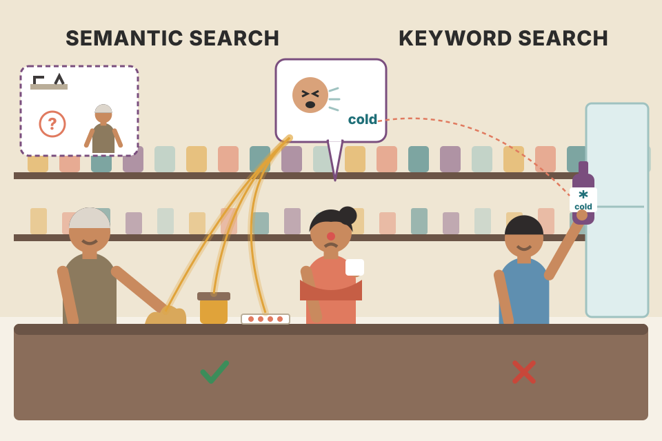
A kirana shopkeeper who has worked there for 20 years. You say "something for a cold" and he hands you ginger, honey and a strip of tablets, even though you never said any of those words. That is semantic search. A new helper who only finds items whose label contains the word "cold" brings you a cold drink. That is keyword search. Where it breaks: the shopkeeper's "understanding" is learned from experience; an embedding model's understanding is learned from its training data, and it can be just as confidently wrong in a shop it has never seen (plate 7).
Keyword search compares the words of the query and the document. A language model compares their meanings, because it maps text to vectors where similar meanings land close together (the embeddings of chapters 2 and 3). The same idea solves hallucination from the other side: instead of trusting what the generator memorised during training, you look up the facts at question time and put them in its prompt.
"Why do LLMs hallucinate, and what's the standard mitigation?" Say: "A generative model predicts plausible text from what it absorbed in training; it has no built-in check that a statement is true or current, so it can be fluent and wrong. The standard mitigation is RAG: retrieve relevant documents at question time, put them in the prompt and instruct the model to answer from them with citations. It doesn't remove hallucination, but it makes answers checkable and up to date."
There is a lot of research on using language models for search. The book groups it into three broad categories, and the rest of the chapter explains each one in turn.
Dense retrieval relies on embeddings (numeric vectors that represent text, as in earlier chapters). Both the query and the documents are turned into embeddings, and search becomes the problem of finding the nearest neighbours of the query vector. The system takes a query, looks through its archive of texts and returns a ranked list of relevant ones.
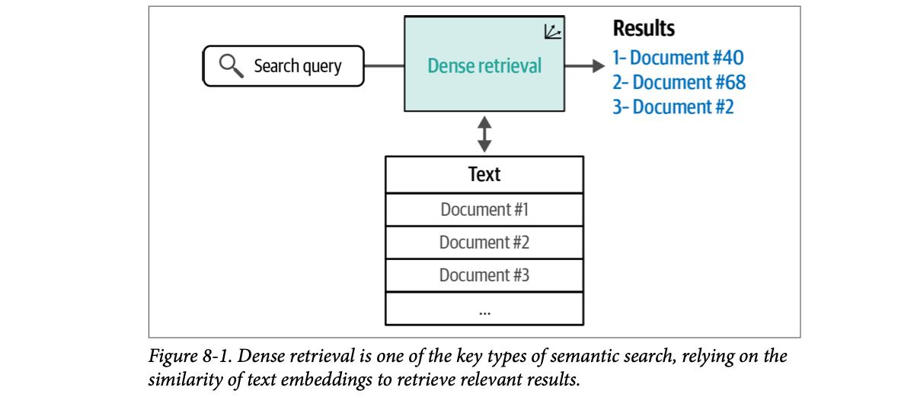
How to read this figure. Left to right: a search query goes into the dense retrieval box. The two-way arrow down to the "Text" table means the box consults the archive (Document #1, #2, #3 …). Out comes an ordered list: Document #40 first, then #68, then #2. Keep those three ids in mind: the next figure reorders them.
Real search systems are usually pipelines of several steps. A reranking language model is one of these steps. It gets the query plus a subset of results from an earlier step, gives each result a relevance score against the query, and changes the order according to those scores. The key difference from dense retrieval: a reranker has an extra input, the search results of a previous step.
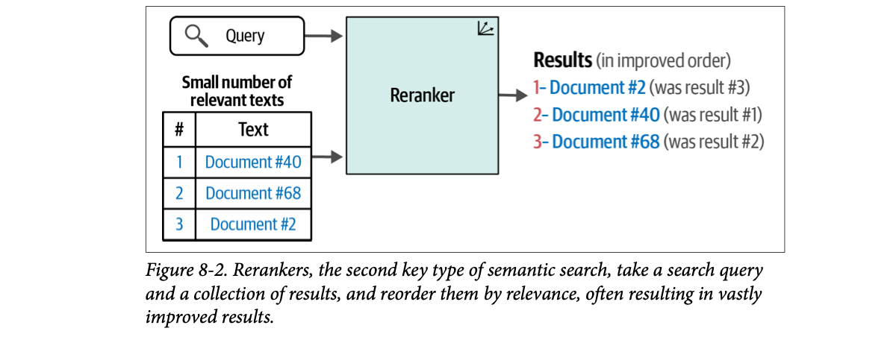
How to read this figure. Two inputs enter the reranker: the query (top arrow) and a small table of already-relevant texts (#40, #68, #2, the output of Figure 8-1). The output is the same three documents in a better order: #2 jumps from third to first, #40 drops to second, #68 to third. Nothing new is retrieved; only the order changes.
As LLMs got good at writing text, a new kind of search system appeared: one that includes a model which generates an answer to the query. The book calls this generative search. Generative search is a subset of a broader category, better named RAG systems: text generation systems that include search so they can reduce hallucinations, increase factuality, and/or ground the generator on a specific dataset.
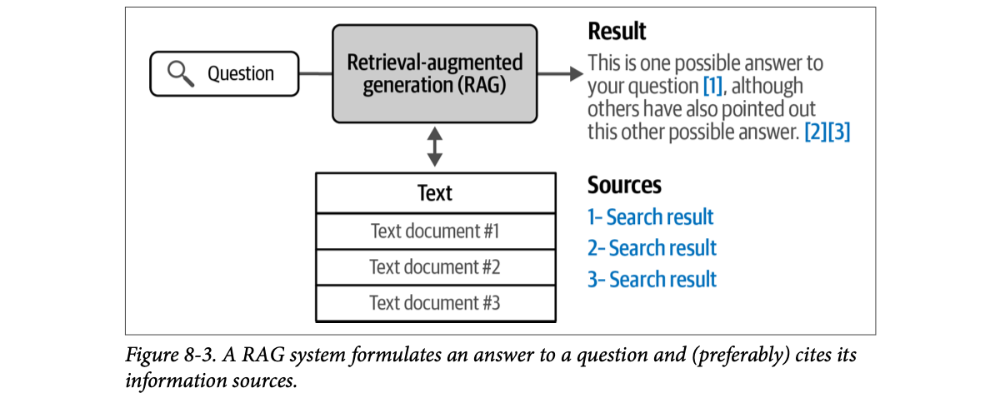
How to read this figure. The input is now a question, not a search query. The RAG box still consults a text archive, but the output is a paragraph of prose with bracketed citation markers [1], [2][3] that point to a "Sources" list of search results. Compare with Figure 8-1: the list of documents has become footnotes under an answer.
These three are the major categories, but the authors stress they are not the only LLM applications in search.
| System | Input | Output | Model used |
|---|---|---|---|
| Dense retrieval | query + whole archive | ranked list of documents | embedding model |
| Reranker | query + shortlist from a previous step | same shortlist, new order + scores | cross-encoder (plate 16) |
| RAG | question + archive | written answer + citations | retriever (+ reranker) + generative LLM |
Railway enquiry at a big station. Dense retrieval is the clerk who pulls out the ten timetable pages that look most related to "overnight train to Pune". Reranking is a senior clerk who reads those ten pages carefully with your question in mind and puts the best one on top. RAG is the clerk who reads the top pages and simply tells you "take the 22:15 from platform 4, it reaches at 6:10", pointing to the page he read it from. Where it breaks: a real clerk notices if none of the pages answer you; a retriever always hands over its "top ten", relevant or not (plate 7).
The three are layers, not rivals. Dense retrieval is cheap per document (one vector comparison), so it can scan millions. A reranker is expensive per document (a full model pass over query + document), so it only sees a shortlist. A generator is the most expensive and only sees the final handful of passages. Each stage spends more compute on fewer items.
The section "Semantic Search with Language Models" opens by saying it will go through the three families in order: dense retrieval first, then reranking, then RAG.
Recall that embeddings turn text into lists of numbers. You can think of each list as a point in space. Points that are close together stand for texts that are similar. In the book's picture, text 1 and text 2 sit near each other, so they are more similar to each other than either is to text 3, which is far away.
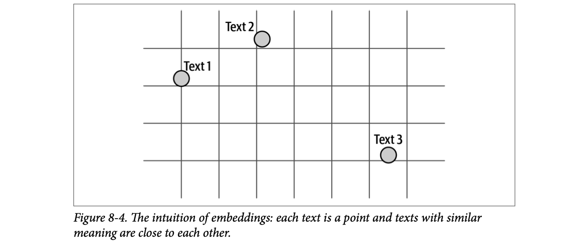
How to read this figure. The grid is a 2-D stand-in for a space that really has hundreds or thousands of dimensions. Only distances matter: Text 1 and Text 2 are a couple of grid cells apart (similar meaning), Text 3 sits in the opposite corner (different meaning). The axes have no labels because the individual dimensions don't have human meanings.
This closeness property is what search is built on. When a user types a query, we embed the query with the same model, which places it in the same space as the archive. Then we find the documents nearest to it; those are the search results.
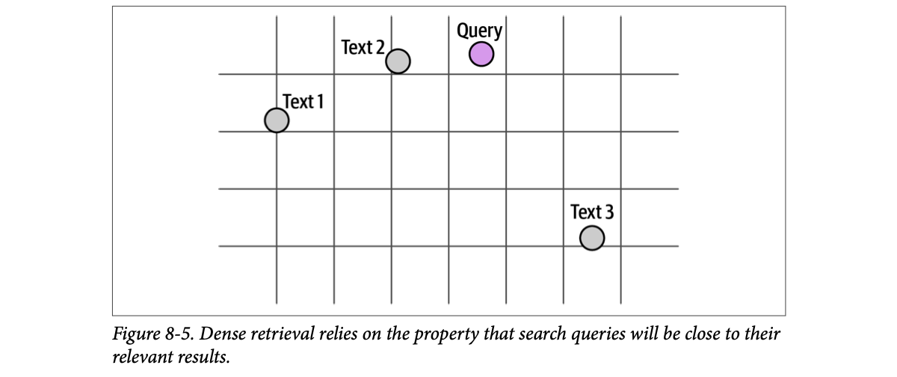
How to read this figure. Same three texts, plus a purple query point in the top middle. Measure by eye: the query is closest to Text 2, next closest to Text 1, and far from Text 3. So the ranking is text 2, then text 1, then (maybe) text 3.
Looking at those distances, two questions come up:
Click or tap anywhere in the grid to move the purple query. The three nearest texts (top-k) light up green; texts farther than the threshold ring are dropped. The points and labels are made up to show the idea.
Before any of that can happen, the archive has to be prepared. Figure 8-6 shows the offline part: we chunk each document into pieces, embed each chunk, and store the vectors in a vector database, ready to be queried.
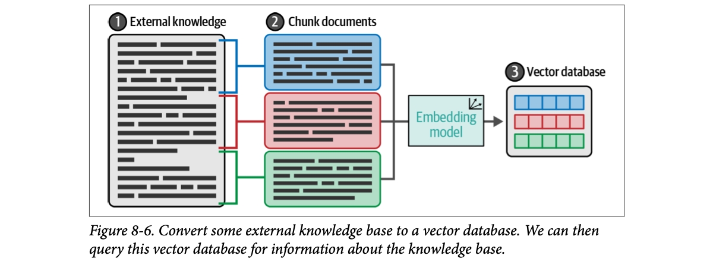
How to read this figure. Three numbered stages. (1) A long grey document is the external knowledge. Coloured brackets cut it into three parts. (2) Those parts are the chunks (blue, red, green). (3) Each chunk passes through one shared embedding model and becomes one row of coloured cells in the vector database. The colours let you trace each chunk to its vector.
Say the archive has three chunk vectors in 2-D: A = (1, 1), B = (2, 1.5), C = (8, 6). The query embeds to Q = (2.5, 2). Euclidean distances: Q–A = √(1.5² + 1²) ≈ 1.80; Q–B = √(0.5² + 0.5²) ≈ 0.71; Q–C = √(5.5² + 4²) ≈ 6.80. Ranking: B, A, C. With a threshold of 3.0, C is dropped and the user sees only B and A.
A big Indian wedding hall seating plan where guests who know each other are seated together: college friends at one table, office people at another. You walk in (the query) and sit wherever feels most familiar. The people at the nearest tables are your "search results". Where it breaks: in the hall, you'd notice if every table was full of strangers. Nearest-neighbour search never notices; the nearest table is returned even if it is far away (that's what the threshold is for).
An embedding model is trained so that texts used in similar ways get similar vectors. A retrieval-tuned model is additionally trained so that a question and the passage that answers it end up close, even if they share few words. Distance (Euclidean, or 1 − cosine similarity) then works as a cheap proxy for "is this relevant?".
"What is dense retrieval and how is it different from keyword search?" Say: "Dense retrieval embeds the query and every document chunk with the same embedding model and returns the k nearest vectors, so it matches by meaning rather than shared words. Offline you chunk, embed and store vectors in an index; online you embed the query and do a nearest-neighbour lookup. It needs a retrieval-trained model because questions and answers aren't naturally similar text, and it usually needs a distance threshold, because kNN always returns something."
The book now builds a tiny dense retrieval system. It uses Cohere (a company that offers embedding, reranking and chat models through an API) to search the opening section of the Wikipedia article on the 2014 film Interstellar. The plan has four steps:
You need a Cohere API key (free sign-up at the link in the book); the authors say running the example costs nothing. The imports are cohere (API client), numpy (arrays), pandas (to show results as a table) and tqdm (progress bars). The book reminds you not to share your key publicly.
The text is the first section of the article: about 15 sentences on who made the film, who stars in it, the plot, the script's origin, the physicist who advised it, how and where it was shot, its effects, its premiere and release, its box office, its reviews, astronomers' praise, its cult following and its Oscars. The "chunking" here is the simplest possible: split on every full stop, then strip spaces and newlines from each piece.
Paraphrased one-line summaries of the 15 sentences, used by the demos on this page (indices match the order in the book's text):
# illustrative, my own variable names
import cohere, numpy as np, pandas as pd
client = cohere.Client(MY_KEY) # keep the key out of public notebooks
raw = """...first section of the Interstellar article..."""
sentences = [s.strip(" \n") for s in raw.split(".")] # one sentence = one chunkWhat each line does: the client object holds your key and sends requests. split(".") cuts the text at every period; strip tidies each piece. It's crude (it would break "Dr. Smith" or "3.5"), but fine for a demo.
All sentences are sent to Cohere's embed endpoint in one call, which returns one vector per sentence. Note the input_type argument: the documents are embedded as "search_document"; later the query is embedded as "search_query". The model is told which side of the search each text is on.
doc_vecs = np.array(
client.embed(texts=sentences, input_type="search_document").embeddings
)
print(doc_vecs.shape) # the book gets (15, 4096)The output shape is (15, 4096): 15 vectors, one per sentence, each with 4,096 numbers.
15 × 4,096 = 61,440 numbers. Stored as 32-bit floats (4 bytes each) that is about 240 KB. Scale it up (modelled): 1 million chunks × 4,096 dims × 4 bytes ≈ 16 GB of raw vectors, before any index overhead. That's why dimension size matters when you choose an embedding model.
Giving every sentence a 4,096-digit "PIN code" for its meaning. Sentences about money get PINs that look alike, sentences about the cast get other look-alike PINs. Where it breaks: a PIN is exact; an embedding is fuzzy, and two PINs being similar only means "probably related".
Why two input types? Queries are short and question-shaped ("how precise was the science"); documents are long and statement-shaped. Some embedding models are trained with a marker for each role so they can map a question close to the statement that answers it, rather than close to other questions. Using the wrong input_type quietly hurts retrieval quality.
"Why use asymmetric embeddings for query and document?" Say: "In search the query and the document are different kinds of text, a short question versus a long passage. Asymmetric models embed each with a role hint, so a question lands near its answer instead of near similar questions. If the provider supports it, you embed the corpus with the document type and live queries with the query type."
Before searching, you need a search index: a structure that stores the embeddings and is optimised to find the nearest neighbours quickly, even when there are a very large number of points. The book uses FAISS (a similarity-search library from Meta). It creates a flat index with L2 (Euclidean) distance whose size equals the vector dimension, then adds the 15 vectors, converted to 32-bit floats.
import faiss
dim = doc_vecs.shape[1] # 4096
idx = faiss.IndexFlatL2(dim) # exact, brute-force L2 index
idx.add(np.float32(doc_vecs)) # FAISS wants float32Notes: "Flat" means FAISS compares the query with every stored vector (exact search, no shortcuts). The book also prints is_trained: a flat index needs no training step, so it is ready immediately. Approximate index types (plate 11) do need training.
Searching is three moves: embed the query (with input_type="search_query"), ask the index for the k nearest vectors, then look up which sentences those ids are and show them with their distances. The book wraps this in a small search function that returns a pandas table with the texts and distances, defaulting to 3 results.
def dense_search(question, k=3):
qv = client.embed(texts=[question], input_type="search_query").embeddings[0]
dist, ids = idx.search(np.float32([qv]), k) # both shaped (1, k)
hits = [sentences[i] for i in ids[0]]
return pd.DataFrame({"text": hits, "distance": dist[0]})
dense_search("how precise was the science")What came back for the query "how precise was the science" (paraphrased):
| Rank | Sentence (summary) | Distance (book) |
|---|---|---|
| 1 | Astronomers praised the film's scientific accuracy and its depiction of theoretical astrophysics. | ≈ 10,757 |
| 2 | Physicist Kip Thorne was executive producer and scientific consultant and wrote a tie-in science book. | ≈ 11,566 |
| 3 | The film used practical and miniature effects; Double Negative added digital effects. | ≈ 11,923 |
The first result has the smallest distance, so it is the most similar, and it answers the question perfectly. The authors' key point: keyword search could not have found it, because the top sentence doesn't contain the query's words ("precise", "science"); it says "accuracy" and "scientific" instead.
Smaller distance = more similar. These are L2 distances on raw, un-normalised 4,096-number vectors, which is why the numbers are in the thousands. Only their order matters.
dense_searchA library where every book has been placed on a giant floor by topic. You drop a pin where your question belongs, and the librarian picks up the three books nearest your pin. Where it breaks: a flat index is a librarian who walks to every book to measure the distance. Fine for 15 books, slow for 15 million (plate 11).
IndexFlatL2.search computes ‖q − dᵢ‖² for all stored vectors dᵢ and returns the k smallest with their positions. Ids come back in a 2-D array because FAISS can search many queries in one call (one row per query). The DataFrame is just for display.
"Walk me through a minimal semantic search service." Say: "Offline: split documents, embed them in batches, add the vectors to an index and keep an id-to-text map. Online: embed the query with the same model, call index.search for top-k, map ids back to text and return them with scores. For a few thousand vectors a flat exact index is fine; beyond that I'd switch to an ANN index or a vector database."
To prove the point, the book builds a keyword search over the same 15 sentences and compares. It uses BM25, which it describes as one of the leading lexical (word-based) search methods, via the rank_bm25 package.
BM25Okapi object is built from the tokenized corpus.keyword_search function scores the query against all sentences, takes the top candidates, sorts them by score and prints the top 3.from rank_bm25 import BM25Okapi
from sklearn.feature_extraction import _stop_words
import string
def words(text):
toks = (t.strip(string.punctuation) for t in text.lower().split())
return [t for t in toks if t and t not in _stop_words.ENGLISH_STOP_WORDS]
bm25 = BM25Okapi([words(s) for s in sentences])
scores = bm25.get_scores(words("how precise was the science"))
top3 = np.argsort(scores)[::-1][:3] # highest BM25 score firstThe book's version uses np.argpartition to pull out the top candidates and then sorts them; argsort above does the same job for 15 items.
Results for the same query (paraphrased):
| Rank | Sentence (summary) | BM25 score (book) |
|---|---|---|
| 1 | Interstellar is a 2014 epic science fiction film by Christopher Nolan. | 1.789 |
| 2 | Kip Thorne … wrote a tie-in book, The Science of Interstellar. | 1.373 |
| 3 | The cast list. | 0.000 |
The top keyword result does not answer the question; it only shares the word "science" with the query. The third result scores 0, meaning it shares no query word at all; it is just filler to make three results. The book then promises that a reranker (plate 14) will improve this keyword system, but first finishes dense retrieval with its caveats and chunking.
This runs real BM25 (k1 = 1.5, b = 0.75) in your browser over my one-line summaries, not the book's exact sentences, so scores differ from the book. Tick "concept matching" to add a toy synonym list (precise→accuracy, science→scientific, money→gross …) as a crude stand-in for what embeddings do.
After stop-word removal the query becomes just [precise, science]. "precise" appears in no sentence, so it adds nothing anywhere. "science" appears in sentences 0 and 4. BM25 gives a term more weight in a short sentence than in a long one (length normalisation), and sentence 0 is much shorter than the Kip Thorne sentence, so sentence 0 wins. The sentence that actually answers the question says "scientific accuracy", which shares no exact token with the query, so BM25 gives it 0.
Searching your WhatsApp chats for "precise science": WhatsApp only shows messages containing those exact letters, so it finds a message about a "science fiction movie" and misses your friend's message saying "the astrophysics was really accurate". Where it breaks: keyword search is not useless: if you search for an order id like "UPI-8812", exact matching is exactly what you want (plate 7).
BM25 scores a document as a sum over query terms of IDF(term) × a saturating function of how often the term appears in the document, scaled down for long documents. IDF (inverse document frequency) rewards rare words. Everything depends on exact token overlap; words with the same meaning but different spelling count for nothing. Dense retrieval replaces token overlap with vector closeness.
"When does BM25 beat embeddings?" Say: "BM25 wins on exact strings: product codes, names, error messages, rare jargon the embedding model never saw. Embeddings win on paraphrase and synonyms. That is why production systems usually run both and merge the lists, which is hybrid search, often followed by a reranker."
It is useful to know the drawbacks of dense retrieval and how to handle them. The book lists four.
Ask the Interstellar index "What is the mass of the moon?". None of the sentences contains that. You still get three results with distances: the box-office sentence, the astronomers' praise sentence and the cinematography sentence (distances about 1.30, 1.32 and 1.33 in the book).
Handling it:
Notice that these distances (≈1.3) are on a very different scale from the ≈10,000 distances of plate 5, even though it's the same index in the book. The book doesn't explain this; it may have been produced with a different (normalised) embedding run. Either way, a fixed threshold only makes sense once you know the scale your model produces.
If a user wants an exact match for a specific phrase, keyword matching is the right tool. This is one reason the book advises hybrid search (semantic search plus keyword search) instead of relying only on dense retrieval.
Dense retrieval models struggle outside the domains they were trained on. Train a retriever on internet and Wikipedia text, deploy it on legal documents without enough legal data in training, and it will work noticeably worse there.
In the demo each sentence held one fact and each query asked for exactly that fact. What about a question whose answer is spread over several sentences? This raises one of the most important design choices in dense retrieval: how should long texts be chunked, and why chunk at all? (Next plate.)
Five made-up queries with made-up best distances (cosine distance, 0 = identical). Move the threshold and see which queries get an answer and which get "no relevant result". A too-strict threshold hides good answers; a too-loose one shows junk.
| Caveat | Symptom | Fix the book mentions |
|---|---|---|
| No answer in corpus | confident-looking junk results | distance threshold; let user judge; learn from clicks |
| Exact phrases | misses an exact name/code | hybrid search (add keyword search) |
| Out-of-domain | quality drop on e.g. legal text | (training data from that domain; see plate 12) |
| Multi-sentence answers | each chunk holds only part of the answer | better chunking (plates 8–10) |
Asking a Mumbai auto driver for directions to a street in Chennai. He will still point confidently in some direction rather than say "I don't know this city". That's dense retrieval out of domain, or with no relevant document. Where it breaks: the auto driver at least knows he's in the wrong city; the model has no such signal unless you add a threshold or a reranker score.
Nearest-neighbour search is a ranking, not a yes/no decision: "nearest" is defined even when nothing is near. Embedding models also only learned which texts are similar in the kinds of text they saw; in a new domain the geometry of the space is less meaningful. Exact-phrase queries suffer because embeddings blur surface form on purpose, so "ID-4471" and "ID-4417" may land almost on top of each other.
"Your RAG bot answers confidently from irrelevant chunks. What do you do?" Say: "First, a relevance cut-off: a calibrated threshold on the retriever or, better, on a reranker score, and if nothing passes, the bot says it doesn't know. Second, hybrid search so exact names and ids are found by BM25. Third, look at whether the embedding model fits the domain, and fine-tune it on in-domain query–passage pairs if not. And log clicks or thumbs-up to build an evaluation set."
One limitation of Transformer language models is their limited context size: you cannot feed them text longer than the number of tokens (or words) the model supports. So how do you embed a long document?
There are several ways. Figure 8-7 shows the two broad approaches: index one vector per document, or index several vectors per document.
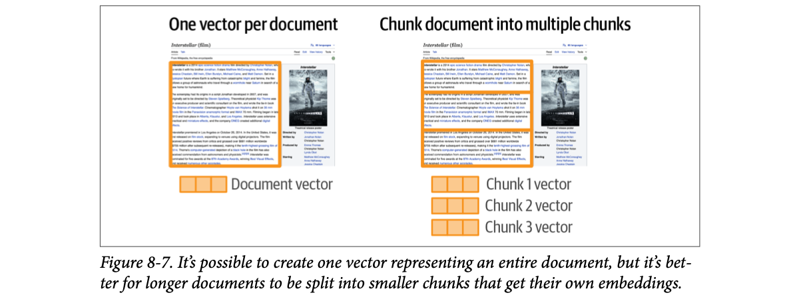
How to read this figure. Same Wikipedia page twice. On the left, a single orange rectangle wraps the whole intro and the result is one document vector (three orange cells). On the right, the intro is boxed as three separate pieces, and each produces its own vector: chunk 1, chunk 2, chunk 3. The right-hand side has three "addresses" in the search space instead of one.
An embedding model with a 512-token limit. A product manual of 6,000 tokens. With one vector per document you can only embed the first 512 tokens (≈ 8.5% of the manual) or average many chunks into one vector. With chunks of 400 tokens you get 15 vectors, and every part of the manual is searchable.
Writing a 300-page book's whole contents on one sticky note versus writing one sticky note per chapter. The single note is a vague summary; the chapter notes let you find "where was the bit about refunds?". Where it breaks: notes that are too small (one per sentence) lose the context that made each sentence meaningful.
Embedding models have a maximum input length; anything beyond it is cut off (truncated) or must be handled separately. Even within the limit, squeezing a lot of text into one fixed-length vector forces the model to compress many topics into one point, which is somewhere "in the middle" of all of them and close to none.
"Why chunk documents at all?" Say: "Two reasons. Embedding models have a maximum input length, so long documents get truncated. And even within the limit, one vector for a long document blurs many topics together, while users usually look for one specific fact. Chunking gives full coverage and one focused vector per idea; the cost is more vectors and the risk of cutting context, which overlap and title prefixes reduce."
Here one vector represents the whole document. The book describes two ways to do it:
This approach can satisfy some information needs but not others. Very often, a search is for one specific piece of information inside an article, and that is much better captured when the concept has its own vector.
Three chunk vectors about very different topics in 2-D. The average lands in the middle, close to none of them. Move the query toward one topic and compare its distance to the matching chunk vs. to the averaged document vector.
Mixing dal, kheer and pickle in one bowl to describe "what's on the thali". The mixture tastes like none of them. If someone asks "is there anything sweet?", the mixed bowl is a poor answer; the separate katoris are a good one. Where it breaks: for "what kind of meal is this?" the mix is actually fine; averages are OK for broad topic questions.
The mean of several vectors sits at their centre of mass. If the chunks point in different directions, the mean is shorter and points to a blend. A query about one specific chunk is close to that chunk but noticeably farther from the blend, so specific questions lose ranking to documents that happen to be "about" that single topic overall.
"Why not just embed each document once?" Say: "Either you truncate and lose everything past the first part, or you average chunk embeddings and get a blurry vector. Users usually want one specific fact, so per-chunk vectors retrieve far better. One-vector-per-doc is fine only for short, single-topic documents or a quick prototype."
In this approach the document is cut into smaller pieces and each piece is embedded. The search index then holds chunk embeddings, not whole-document embeddings. Figure 8-8 shows some ways of cutting text.
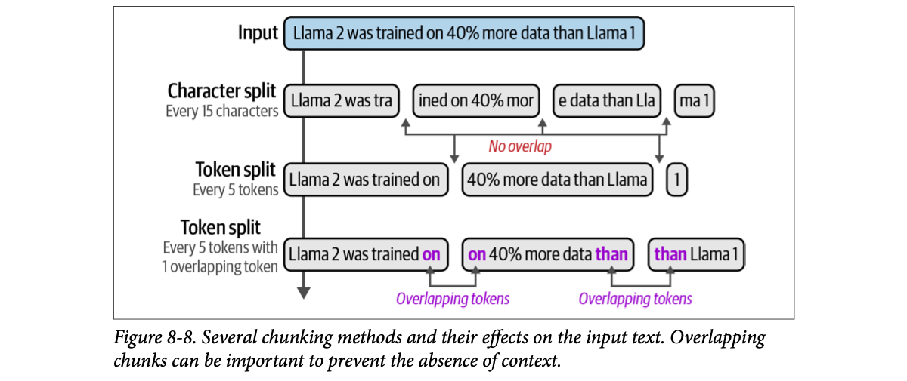
How to read this figure. One input sentence, about Llama 2 being trained on 40% more data than Llama 1, is split three ways. Character split, every 15 characters: pieces break in the middle of words ("tra" | "ined") with no overlap. Token split, every 5 tokens: pieces follow token boundaries but the last piece is a lonely "1". Token split, every 5 tokens with 1 overlapping token: the last token of each piece is repeated at the start of the next (the purple "on" and "than"), so each chunk keeps a little of its neighbour.
Chunking is better than one vector per document for two reasons: it gives full coverage of the text, and each vector tends to capture one concept from the text. Together that makes a more expressive search index. Figure 8-9 shows common options.
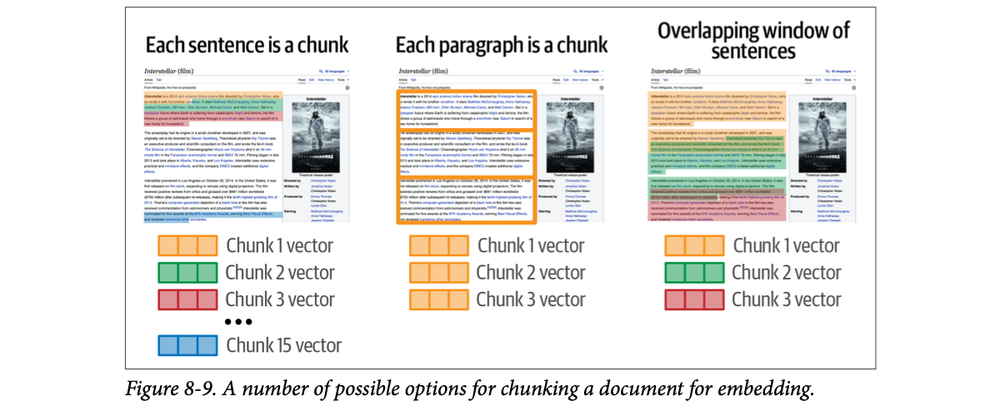
How to read this figure. Left: each sentence is a chunk, so the intro becomes 15 coloured stripes and 15 vectors (the "…" between chunk 3 and chunk 15). Middle: each paragraph is a chunk, giving 3 vectors. Right: an overlapping window of sentences: coloured bands overlap so some sentences belong to two chunks, still giving 3 vectors but with shared edges.
The best way to chunk depends on the kinds of texts and queries you expect. The book lists:
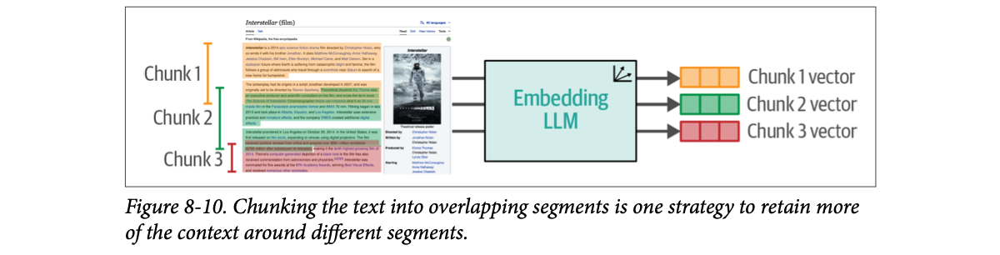
How to read this figure. Look at the brackets on the left margin: chunk 1's bracket ends below where chunk 2's begins, and chunk 2 overlaps chunk 3 the same way. The overlapped lines are fed to the embedding LLM twice, once as part of each chunk. Out come three vectors.
The authors expect more chunking strategies to appear as the field develops, some of which may use LLMs to split text dynamically into meaningful chunks.
My own sample text. Choose a method, chunk size and overlap; overlapped words are highlighted. Words stand in for tokens here.
| Strategy | Good for | Watch out for |
|---|---|---|
| Fixed characters | trivial to implement | cuts words and sentences in half |
| Fixed tokens | matches the model's limit exactly | can still cut mid-sentence; leftover tiny chunk |
| Sentence | FAQ-style text, one fact per sentence | too granular, little context |
| Paragraph / 3–8 sentences | most prose | long paragraphs may exceed the limit |
| + title / + overlap | chunks that need surroundings to make sense | more vectors to store; duplicate text in results |
| LLM-based (future, per the book) | semantically clean boundaries | cost and latency at indexing time |
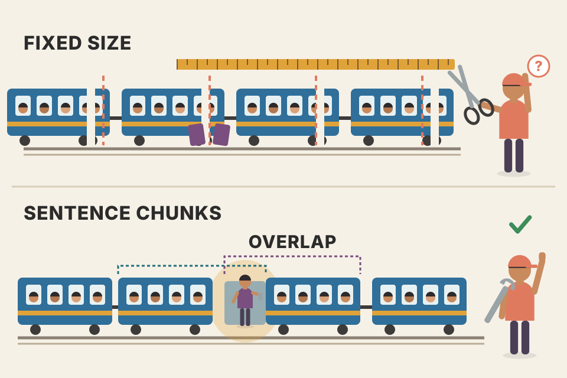
Cutting a long train into coaches. Cut every 15 metres (characters) and you slice through passengers. Cut at the coach joints (sentences/paragraphs) and every coach is whole. Overlap is the vestibule shared between two coaches: someone standing there belongs to both. Where it breaks: in a train, nobody is in two coaches at once; in a chunk index, overlapped text really is stored twice and can show up twice in results.
A chunk's vector only "knows" what's inside the chunk. A sentence like "It won the award in 2015" means nothing without knowing what "it" is. Overlap and title prefixes copy the missing referent into the chunk so the embedding can capture it. The trade-off is chunk count: overlap of o tokens with chunk size s gives about N / (s − o) chunks for N tokens.
A 10,000-token document, chunk size 500 tokens. No overlap: 10,000 / 500 = 20 chunks. Overlap 100 tokens: the window moves 400 tokens each time, so about 10,000 / 400 = 25 chunks, 25% more vectors to store and search, in exchange for no fact being cut off at a boundary.
"How do you choose a chunk size?" Say: "It depends on the documents and queries. I start with paragraph-sized chunks of a few hundred tokens with some overlap, prepend the title or section heading, and then tune size and overlap against a retrieval evaluation set, measuring recall@k or MAP. Small chunks give precise hits but lose context; big chunks keep context but dilute the vector and use up the LLM's context window."
Once the query is embedded, you need the vectors in the archive that are nearest to it. The most direct way is to compute the distance between the query and every vector in the archive. That's easy with NumPy, and the book calls it reasonable for thousands or tens of thousands of vectors.
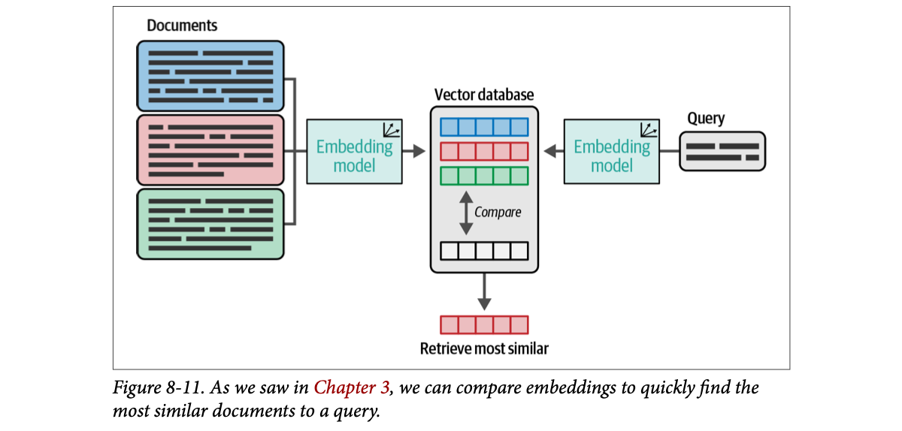
How to read this figure. Left: three documents (blue, red, green) go through an embedding model into the vector database as three coloured rows. Right: the query goes through an embedding model (the same kind) and becomes a white row. The "Compare" arrow inside the database is the distance computation. The output at the bottom is a red row: the red document was the closest match.
Beyond that, into millions of vectors, the optimised approach is an approximate nearest neighbour (ANN) search library such as Annoy or FAISS. These return results from massive indexes in milliseconds, and some can use GPUs and scale to clusters of machines to serve very large indices.
A further class of systems is vector databases such as Weaviate or Pinecone. A vector database lets you add or delete vectors without rebuilding the index, and offers ways to filter or customise search beyond plain vector distance.
# brute force with NumPy: fine for ~10^4 vectors
def brute_force(qv, mat, k=3):
d = np.linalg.norm(mat - qv, axis=1) # distance to every row
best = np.argsort(d)[:k]
return best, d[best]Rough cost model: brute force does N × dim multiply-adds per query. I assume a CPU does about 10 billion per second. ANN indexes look at only a small fraction of vectors (assumed 1% here). Real numbers vary a lot by hardware and index type.
| Option | Examples from the book | Scale | What it adds |
|---|---|---|---|
| Brute-force distances | NumPy | thousands to tens of thousands | exact results, no setup |
| ANN library | Annoy, FAISS | millions and more; ms latency | GPU use, clusters for huge indices |
| Vector database | Weaviate, Pinecone | production, changing data | add/delete without rebuild; filters; custom search |
Finding your friend in a crowd. In a classroom you look at every face (brute force). At a cricket stadium you first go to the right stand and block, then look at faces there (approximate search: you might miss them if they sat in the wrong block). A vector database is the stadium's ticketing system: people keep arriving and leaving, and you can also filter "only the North Stand". Where it breaks: a stadium has fixed blocks; ANN indexes learn their "blocks" from the data and may need re-tuning as data changes.
ANN indexes trade a little accuracy for a lot of speed. They group vectors (for example into clusters, or a graph of near neighbours) so that a query only has to visit a small part of the index. "Approximate" means the true nearest vector is occasionally missed. Vector databases wrap such indexes with storage, updates, metadata filters and APIs.
Common ANN index families today are IVF (inverted file: cluster then search a few clusters), HNSW (a layered graph of neighbours) and product quantisation (compress vectors). Other popular vector stores include Qdrant, Milvus, Chroma and pgvector (a PostgreSQL extension). The book only names Annoy, FAISS, Weaviate and Pinecone.
"FAISS or a vector database?" Say: "FAISS is a library: very fast, in-process, but I manage persistence, updates and filtering myself, and some index types need rebuilding. A vector database gives me inserts and deletes without rebuilding, metadata filters like tenant id or date, and a network API. For a static corpus in one service FAISS is enough; for multi-tenant, changing data, like per-user memory, I'd use a vector DB."
As with text classification in Chapter 4, you can improve an LLM's performance on retrieval by fine-tuning it. The difference from token-level tasks: retrieval needs good text embeddings (one vector per text), not just token embeddings. The training data is made of queries and their relevant results.
The book's example uses the sentence "Interstellar premiered on October 26, 2014, in Los Angeles." Two queries for which this sentence is the right result:
Fine-tuning tries to pull these queries' embeddings close to the sentence's embedding. It also needs negative examples, queries that are not relevant to the sentence, such as:
That gives three pairs: two positive pairs and one negative pair. Suppose (as in Figure 8-12) that before fine-tuning all three queries are the same distance from the document. That's not far-fetched: they all talk about Interstellar.
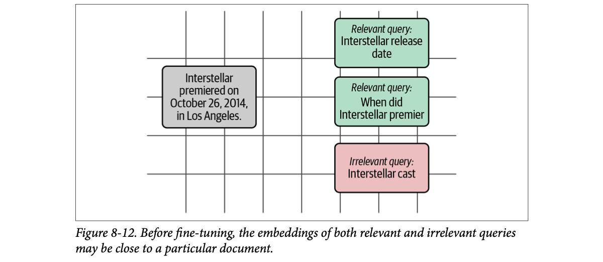
How to read this figure. The grey box is the document. The three query boxes are lined up in the same column on the right, so they are all about equally far from it: the model can't tell the two green (relevant) queries from the red (irrelevant) one.
Fine-tuning moves the relevant queries closer to the document and at the same time pushes irrelevant ones farther away (Figure 8-13).
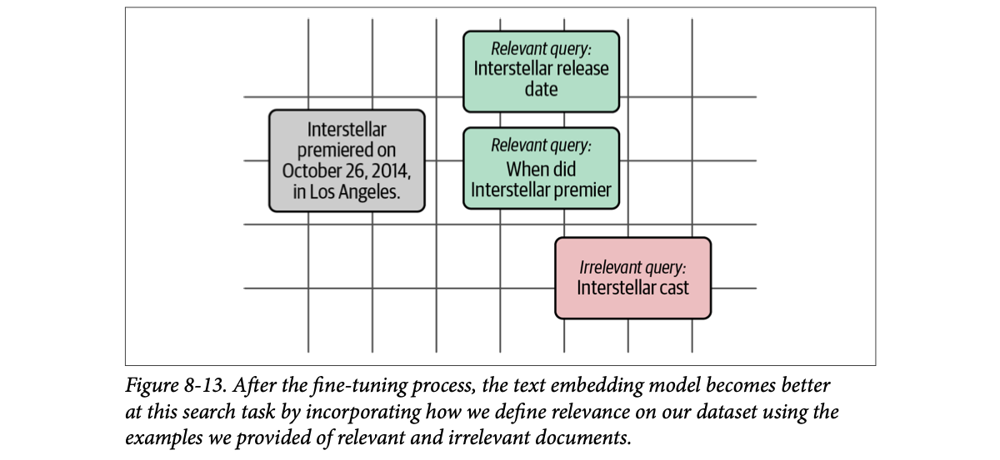
How to read this figure. Compare with Figure 8-12: the two green boxes have slid one column left, right next to the document, while the red "cast" box stays where it was (now relatively far). The document didn't move; the model's mapping of the queries did.
Training a new waiter at a South Indian restaurant. At first, "one by two coffee", "half coffee" and "filter coffee, large" all sound equally like "coffee" to him. After a week of being corrected, he knows the first two mean the same small order, and the third is something else. Where it breaks: the waiter learns from a handful of corrections; an embedding model needs many thousands of (query, relevant, irrelevant) examples.
The training objective is contrastive: for each query, increase similarity with its positive passage and decrease similarity with negatives. Gradients flow into the embedding model's weights, so the change generalises to new queries that look like the training ones. "Hard" negatives (on-topic but wrong, like "Interstellar cast") teach the most, because they force the model to separate things that look alike.
"Retrieval quality is poor on our internal docs. Would you fine-tune the embedding model?" Say: "First I'd confirm with an eval set that the retriever, not the generator, is the problem. If so, I'd build (query, relevant passage) pairs, from logs, or synthetic questions generated per chunk by an LLM, add hard negatives, and fine-tune with a contrastive loss. Then compare MAP or recall@k against the base model on held-out queries."
Many organisations already have a search system. For them, the easiest way to bring in language models is as a final step in the existing pipeline. That step changes the order of the search results based on how relevant they are to the query. This single step can improve results a lot. In fact, the book says this is what Microsoft Bing added to get its BERT-driven improvements (plate 1).
Figure 8-14 shows the structure: a two-stage search system where the reranker is the second stage.
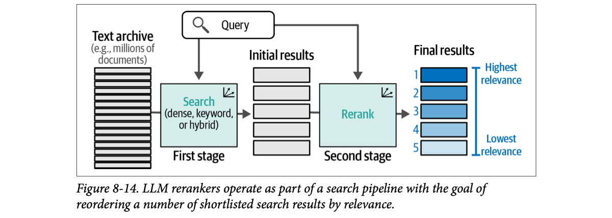
How to read this figure. Follow left to right. The text archive (for example millions of documents) goes into the first stage: a search that can be dense, keyword or hybrid. It produces a short list of initial results (five grey bars). The query is fed into both stages (the two arrows from the query box). The second stage, rerank, outputs final results numbered 1–5, shaded from dark blue (highest relevance) to pale (lowest).
A cricket selection process. District trials (first stage) cheaply shortlist 30 players from thousands using simple stats. The national selectors (reranker) then watch each of the 30 bat in person and order them carefully. Where it breaks: if the district trials missed a great player, the selectors never see him. A reranker can only reorder what stage one retrieved.
Stage one must be fast over the whole archive, so it uses cheap scoring (BM25 or a vector lookup). Stage two can be slow per document because it only sees, say, 100 of them, so it can use a full Transformer pass that reads query and document together. This is why reranking is so easy to adopt: it doesn't care what stage one is.
"How would you add LLMs to a mature search product without rebuilding it?" Say: "Keep the existing retrieval as stage one and add a cross-encoder reranker over its top 50–200 results. It's a drop-in step, it's measurable with offline metrics like nDCG or MAP, and it's what Bing did with BERT. The cost is extra latency per query, which you control with the shortlist size."
A reranker takes the query and some search results and returns the best ordering, with the most relevant documents highest. The book uses Cohere's Rerank endpoint: you pass the query and texts and get results back, with no training or tuning needed.
ranked = client.rerank(
query="how precise was the science",
documents=sentences, # here: all 15 sentences
top_n=3,
return_documents=True, # include the text in the response
)
for pos, r in enumerate(ranked.results):
print(pos, r.relevance_score, r.document.text)Results (paraphrased):
| Rank | Sentence (summary) | Relevance score (book) |
|---|---|---|
| 0 | Astronomers praised its scientific accuracy. | ≈ 0.170 |
| 1 | Worldwide gross of over $677 million. | ≈ 0.070 |
| 2 | Kip Thorne, physicist and scientific consultant. | ≈ 0.004 |
The reranker is much more confident about the first result (the book rounds it to 0.16) than the others. Higher score = more relevant (the opposite of distance).
Here all 15 documents went to the reranker. In practice an index has thousands or millions of entries, so you shortlist maybe a hundred or a thousand results first and send only those to the reranker. That shortlisting step is the first stage of the search pipeline. It can be keyword search, dense retrieval, or better, hybrid search that uses both.
The book revisits the BM25 example: a new function keyword_and_reranking_search gets the top 10 from BM25, prints BM25's top 3, then sends all 10 to rerank and prints the reranker's top 3.
def bm25_then_rerank(question, shortlist=10, k=3):
scores = bm25.get_scores(words(question))
cand = np.argsort(scores)[::-1][:shortlist] # stage 1: BM25 top 10
texts10 = [sentences[i] for i in cand]
best = client.rerank(query=question, documents=texts10,
top_n=k, return_documents=True) # stage 2
return [(r.relevance_score, r.document.text) for r in best.results]What the book's run shows (paraphrased):
Keyword search gives non-zero scores to only two results, those sharing a keyword. The reranker moves the Kip Thorne sentence (BM25's second result) up to first, which the authors call the appropriate most-relevant result here. (The astronomers' sentence, the true best answer, isn't in the reranked list. The book doesn't say why, but it was evidently not among BM25's 10 candidates: otherwise the reranker would have scored it about 0.17 again, as in the first run. The reranker can only reorder what stage one found.) This is a toy example, but such pipelines significantly improve real search. On the multilingual benchmark MIRACL, a reranker can lift performance from 36.5 to 62.8, measured as nDCG@10 (plate 19).
Note that the third BM25 hit here (effects) differs from plate 6's third hit (cast). Both scored 0.000, so which zero-score sentence fills slot 3 is arbitrary.
MIRACL: 36.5 → 62.8 is an absolute gain of 26.3 points and a relative gain of 62.8 / 36.5 ≈ 1.72×. Roughly: in the top 10 results, relevant documents end up much more often near the very top, where nDCG gives the most credit.
A Swiggy search for "something light for dinner". Stage one (keywords) shortlists everything with "light" in the name, including "Light House Café's double cheese burger". The reranker actually reads each dish's description against your request and pushes khichdi and soup to the top. Where it breaks: if stage one never pulled the khichdi in, no amount of reranking will show it.
The relevance score is not a distance but a model's estimate of "how well does this document answer this query", typically between 0 and 1. Scores are comparable across documents for the same query, which is what ordering needs. In the BM25 + rerank run, all scores are tiny (≈0.004) because none of the 10 shortlisted sentences really answers the question; that small absolute value is itself a useful "nothing great here" signal.
"Your retriever's recall@100 is high but precision@5 is poor. What do you add?" Say: "A reranker. The right answers are in the top 100, just badly ordered. I'd rerank the top 100 with a cross-encoder and pass the top 5 on. If recall@100 were low, reranking wouldn't help and I'd fix stage one instead: hybrid search, better chunking or a better embedding model."
If you'd rather run retrieval and reranking locally than call an API, the book points to the Sentence Transformers library. Its documentation covers setup, and its "Retrieve & Re-Rank" section has instructions and code for doing both steps with the library.
# illustrative sketch of the two local stages with sentence-transformers
from sentence_transformers import SentenceTransformer, CrossEncoder, util
bi = SentenceTransformer(EMBED_MODEL_NAME) # stage 1: bi-encoder
ce = CrossEncoder(RERANK_MODEL_NAME) # stage 2: cross-encoder
doc_emb = bi.encode(sentences, convert_to_tensor=True)
q_emb = bi.encode(question, convert_to_tensor=True)
hits = util.semantic_search(q_emb, doc_emb, top_k=10)[0]
pairs = [(question, sentences[h["corpus_id"]]) for h in hits]
scores = ce.predict(pairs) # one score per (query, doc)The book only names the library and the docs section; the snippet above is my sketch of the pattern those docs describe (model names left as placeholders).
Cooking at home instead of ordering from a restaurant: more setup, but you control the ingredients (models), there's no delivery fee per order (API cost), and nothing leaves your kitchen (data privacy). Where it breaks: the restaurant's chef (a large managed model) may simply be better than your home recipe.
Sentence Transformers wraps two kinds of models: bi-encoders that embed query and documents separately (good for stage one, since document vectors can be precomputed) and cross-encoders that read a (query, document) pair together and output one score (good for stage two).
"Managed reranker API or self-hosted?" Say: "Managed is fastest to ship and often strongest. Self-hosted cross-encoders avoid per-call cost and keep data in-house, and a small one on a GPU can rerank 100 pairs in tens of milliseconds. For a latency-sensitive voice agent I'd measure both, because a network round trip to an API can cost more than the model itself."
A popular way to build LLM rerankers is to give the model the query and one result together, as a cross-encoder. Because the model sees both texts at once, it can compare them closely before assigning a relevance score.
All documents are processed simultaneously as a batch, but each document is still scored against the query independently. The scores then decide the new order. The method is described in the paper "Multi-stage document ranking with BERT" and is sometimes called monoBERT.
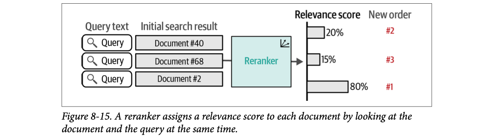
How to read this figure. Each row is one model input: the same query glued to one initial result (#40, #68, #2). The reranker gives each pair a score: #40 → 20%, #68 → 15%, #2 → 80%. The red "new order" column turns those into ranks: #2 becomes first, #40 second, #68 third, which is exactly the reordering of Figure 8-2.
Seen this way, search-as-relevance-scoring is basically a classification problem: given the inputs, the model outputs a score from 0 to 1, where 0 means irrelevant and 1 means highly relevant. This should feel familiar from the classification chapter (Chapter 4).
For the history of LLMs in search, the book recommends "Pretrained transformers for text ranking: BERT and beyond", which covers developments up to about 2021.
| Bi-encoder (dense retrieval) | Cross-encoder (reranker) | |
|---|---|---|
| Input | query and document embedded separately | query and document together in one pass |
| Output | two vectors; score = similarity | one relevance score, 0–1 |
| Precompute docs? | yes, embed once, store in index | no, must run per (query, doc) pair at query time |
| Cost per query | 1 model pass + cheap vector math | one model pass per candidate document |
| Accuracy | good | usually better: words can attend across query and doc |
| Use as | stage 1 over millions | stage 2 over a shortlist |
Choose a candidate. The box shows the single sequence fed to the model (BERT-style [CLS] … [SEP] … [SEP]); the score is a made-up output. Then see how the ranking builds up as each pair is scored.
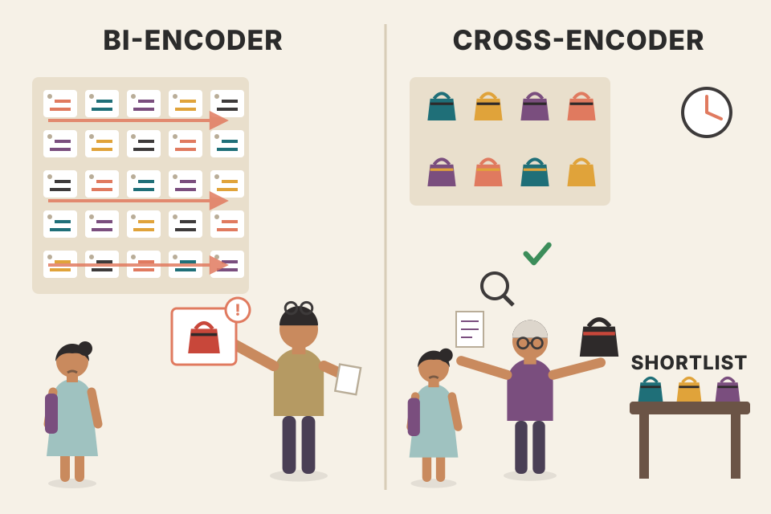
Matching a lost-and-found description. A bi-encoder is the clerk who wrote a short tag for every item in advance and now compares your description to the tags. A cross-encoder is a clerk who holds your written description in one hand and each item in the other and checks them side by side: slower, but catches that "black bag with a red zip" is not the "red bag with a black zip". Where it breaks: the careful clerk can only check a few items before closing time; that's the shortlist.
In a cross-encoder, self-attention runs over the concatenated query and document, so every query token can attend to every document token. The final [CLS] representation goes into a small classification head that outputs P(relevant). That is the same "sentence-pair classification" setup as in Chapter 4. A bi-encoder never lets the two texts interact; it can only compare two finished summaries.
"Why not use a cross-encoder for the whole search?" Say: "Because it has to run once per (query, document) pair at query time and nothing can be precomputed. Over a million documents that's a million Transformer passes per query. A bi-encoder precomputes document vectors, so a query costs one pass plus vector math. So we use the bi-encoder for recall and the cross-encoder for precision on the top candidates."
Semantic search is evaluated with metrics from the information retrieval (IR) field. The book walks through one popular metric: mean average precision (MAP).
Evaluating search needs three components:
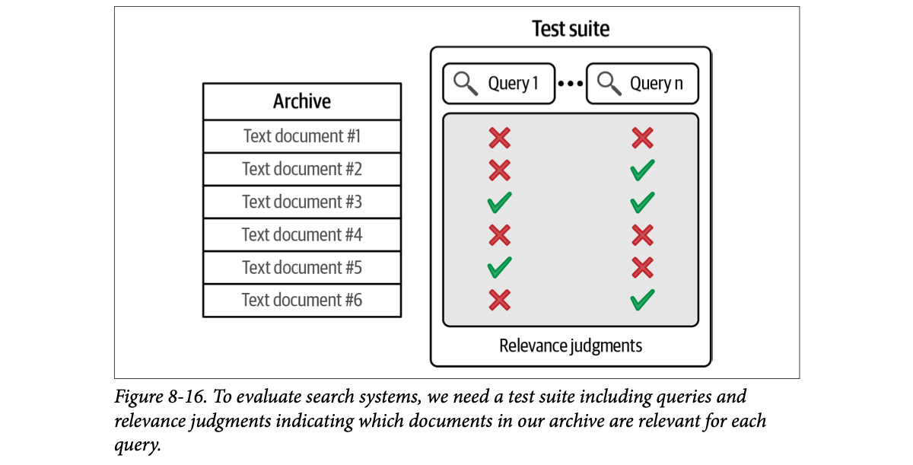
How to read this figure. Left: the archive, documents #1–#6. Right: the test suite, with columns for Query 1 … Query n. Each cell is a judgment for (document row, query column). For Query 1, documents #3 and #5 have green ticks (relevant); the rest are red crosses. For Query n, documents #2, #3 and #6 are relevant. A document can be relevant to several queries.
Start simple: send query 1 to two different search systems and keep the top three results from each.
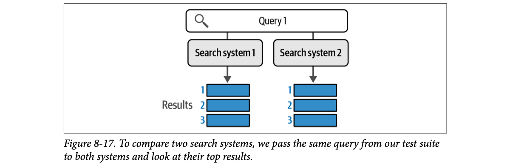
How to read this figure. One query box at the top fans out to two systems. Each returns three blue result bars, positions 1–3. No judgments yet: we can't tell which list is better until we check them against the test suite.
To decide which is better, check the results against the relevance judgments for that query.
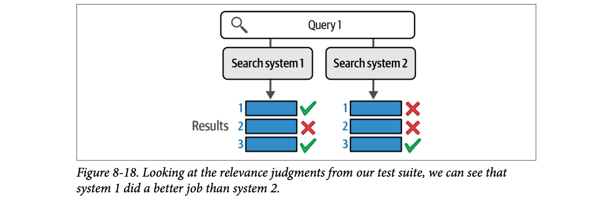
How to read this figure. Ticks and crosses now sit beside each result. System 1: ✓ ✗ ✓ (two relevant out of three). System 2: ✗ ✗ ✓ (one out of three). Easy call: system 1 wins.
Here you could just count relevant results: 2 of 3 for system 1 versus 1 of 3 for system 2. But what about Figure 8-19, where both systems get exactly one relevant result in three, at different positions?
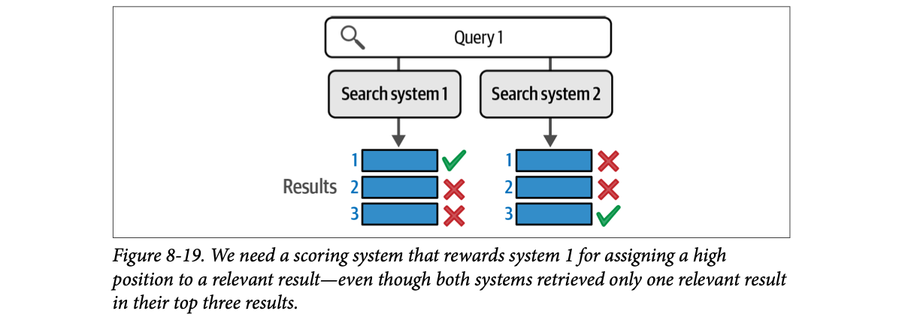
How to read this figure. System 1: ✓ ✗ ✗. System 2: ✗ ✗ ✓. Same count (one tick each), so counting calls it a tie. But system 1 put the right answer in position 1, the most important slot.
Intuitively, system 1 did better, because the top position is correct. But how do we put a number on "how much better"? Mean average precision quantifies exactly this. One common scoring, average precision, rates system 1's result for this query as 1 and system 2's as 0.3. The next two plates show how it's calculated for one query and then aggregated over all queries.
An answer key for a quiz. The archive is the textbook, the queries are the quiz questions, and the relevance judgments are the teacher's answer key saying which pages answer each question. Two students (search systems) each list three pages per question. Where it breaks: a real answer key is complete; in big archives, judgments are often incomplete, so a "wrong" result might just be an unjudged right one.
Users mostly look at the top few results, so a good metric must care about order, not just about membership in the top k. Counting relevant results in the top 3 (precision@3) ignores order inside the top 3. Average precision fixes that by computing precision at the rank of each relevant result.
"How would you evaluate a retriever before launch?" Say: "Build a test suite: a sample of real queries, the corpus, and relevance labels per query, from annotators, click logs or an LLM judge checked by humans. Then compute order-aware metrics like MAP or nDCG@10, plus recall@k for the RAG use case, and compare candidate retrievers, chunkings and rerankers on the same suite."
To score a system on one query, focus on the relevant documents. Start with a query that has only one relevant document in the test suite.
Case 1: the relevant document is at position 1. This earns the perfect score of 1. Precision at position k (precision@k) is the number of relevant results in the first k positions divided by k. At position 1 there is one relevant result, so precision@1 = 1 / 1 = 1.0.
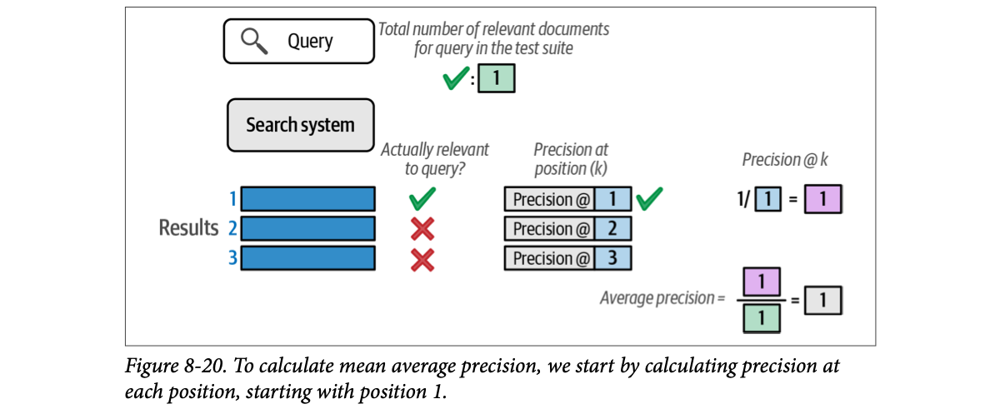
How to read this figure. Top: the test suite says this query has 1 relevant document (green box). Middle: results 1–3 with "actually relevant?" marks ✓ ✗ ✗. The "Precision @ 1 / 2 / 3" boxes show where we could compute precision, but only the relevant position counts: at position 1, 1 relevant ÷ 1 position = 1 (purple). Bottom: average precision = (sum of purple values) ÷ (number of relevant documents) = 1 ÷ 1 = 1.
Because only relevant documents are scored, you can ignore the non-relevant positions and stop there.
Case 2: the only relevant document is at position 3. That gets penalised.
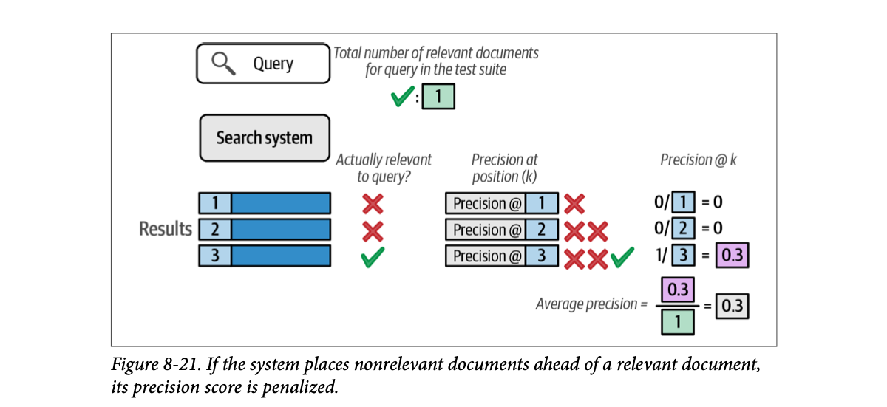
How to read this figure. Marks are ✗ ✗ ✓. Precision@1 = 0/1 = 0, precision@2 = 0/2 = 0, precision@3 = 1/3 ≈ 0.3 (the book rounds 0.333 to 0.3). Only position 3 holds a relevant document, so AP = 0.3 ÷ 1 = 0.3. This is system 2's score from plate 17.
Case 3: a query with more than one relevant document. Now the averaging matters.
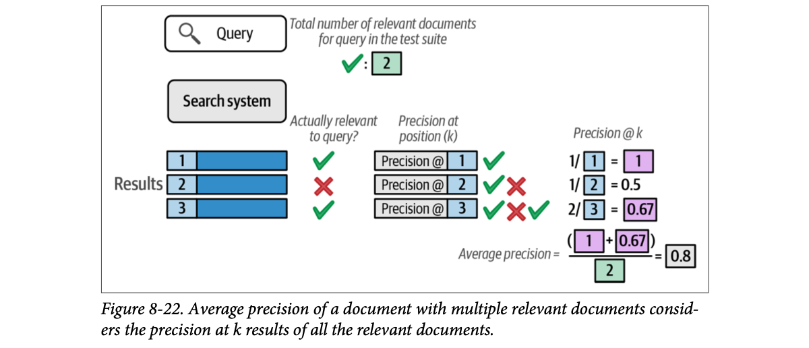
How to read this figure. The test suite now says 2 relevant documents. Marks are ✓ ✗ ✓. Precision@1 = 1/1 = 1 (relevant, counts), precision@2 = 1/2 = 0.5 (not relevant, ignored), precision@3 = 2/3 ≈ 0.67 (relevant, counts). AP = (1 + 0.67) ÷ 2 ≈ 0.83, shown rounded as 0.8.
Click a result to toggle it relevant ✓ / not relevant ✗. Set how many relevant documents exist in the test suite (relevant documents never retrieved still count in the denominator).
Judging a cricket team's batting order. If your best batsman (the relevant one) opens, full marks. If he comes in at number 3 after two ducks, you still got his runs, but late, so you lose marks. Where it breaks: in cricket the later batsmen still bat; in search, many users never scroll past result 3.
Precision@k measured at the position of each relevant hit asks: "when the user reached this good result, what fraction of what they had seen so far was good?". Every irrelevant result above it lowers that fraction. Dividing by the total number of relevant documents (not just the ones retrieved) also penalises a system that never finds some of them: they contribute 0 to the sum.
"Compute AP for results ✗ ✓ ✓ with 3 relevant docs in total." Say: "Relevant hits are at positions 2 and 3. Precision@2 = 1/2 = 0.5, precision@3 = 2/3 ≈ 0.67. The third relevant document was never retrieved, so it adds 0. AP = (0.5 + 0.67 + 0) / 3 ≈ 0.39."
With precision@k and average precision in hand, you can score a system against all queries in the test suite. Mean average precision (MAP) is simply the mean of the average precisions of every query.
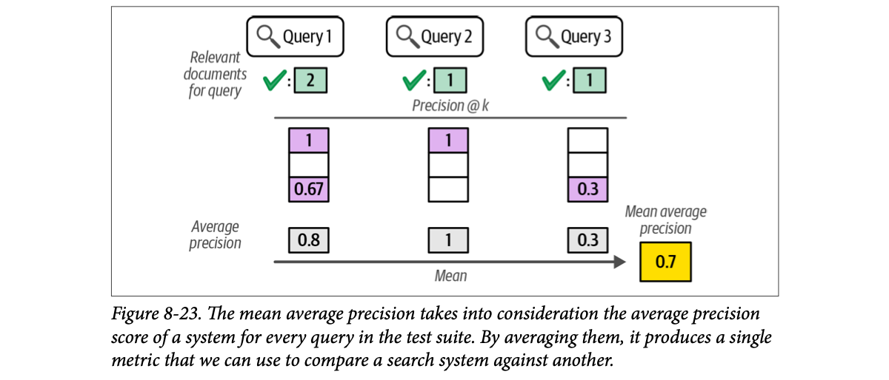
How to read this figure. Three columns, one per query. Under each, the purple boxes are the precision@k values at relevant positions (from plate 18's three cases). Query 1 (2 relevant): 1 and 0.67 → AP 0.8. Query 2 (1 relevant, at the top): 1 → AP 1. Query 3 (1 relevant, at position 3): 0.3 → AP 0.3. The arrow labelled "Mean" averages them: (0.8 + 1 + 0.3) / 3 = 0.7 (yellow box).
Why is it called both "mean" and "average"? The authors suspect it's an aesthetic choice: "MAP" sounds better than "average average precision". Now there is one number to compare systems. For more, they point to the "Evaluation in Information Retrieval" chapter of Introduction to Information Retrieval (Cambridge University Press) by Christopher D. Manning, Prabhakar Raghavan and Hinrich Schütze.
Besides MAP, another common search metric is normalized discounted cumulative gain (nDCG). It is more nuanced: relevance is not binary (relevant vs not). A document can be labelled more relevant than another in the test suite, and the scoring takes those grades into account. (This is the metric behind the MIRACL 36.5 → 62.8 number in plate 14.)
The DCG/nDCG formulas are the standard textbook definitions (Beyond the book: the chapter names nDCG but does not give the formula).
Click results to toggle ✓/✗. Defaults reproduce Figure 8-23. The calculator shows 0.72 rather than the book's 0.7 because it uses exact APs (0.833 and 0.333) where the figure rounds them to 0.8 and 0.3. In the nDCG box, click a result to cycle its grade 0 → 1 → 2 → 3.
System A: APs 1.0, 1.0, 0.1 → MAP 0.70. System B: APs 0.7, 0.7, 0.7 → MAP 0.70. Same MAP, very different behaviour: A is perfect on two queries and terrible on one. Always look at per-query scores too, especially for queries that matter most to the business.
A school report card. AP is the mark in one subject; MAP is the overall percentage. nDCG is a teacher who gives partial credit: a nearly right answer gets 2 out of 3 instead of zero. Where it breaks: students know which subjects matter for their career; MAP weights every query equally unless you weight them yourself.
MAP treats relevance as yes/no and rewards putting every relevant result early. nDCG gives each position a discount (1 / log₂(position + 1)), so gains near the top count most, sums the discounted gains, and divides by the best possible sum for that query so scores are between 0 and 1 and comparable across queries.
"MAP or nDCG?" Say: "MAP if relevance labels are binary and I care about all relevant documents being ranked early. nDCG@k if I have graded labels, like perfect / good / fair, or I only care about the top k a user actually sees. For RAG, where the LLM reads the top 5, I'd also track recall@5: is the needed passage in the context at all?"
Once LLMs were everywhere, people started asking them questions and expecting facts. Models get some questions right, but they also confidently get many wrong. The industry's leading remedy is RAG, described in the 2020 paper "Retrieval-Augmented Generation for Knowledge-Intensive NLP Tasks" by Patrick Lewis et al. (NeurIPS 33, footnote 1 in the book).
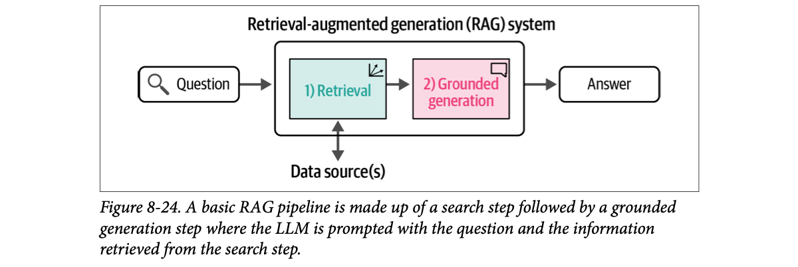
How to read this figure. One big box, the RAG system, with two stages inside. (1) Retrieval (teal) talks to the data source(s) below it (plural: there can be several). (2) Grounded generation (pink, with a speech-bubble icon meaning "LLM writes text") takes what retrieval found. The user only sees question in, answer out.
RAG systems add search to generation. The book lists what that buys:
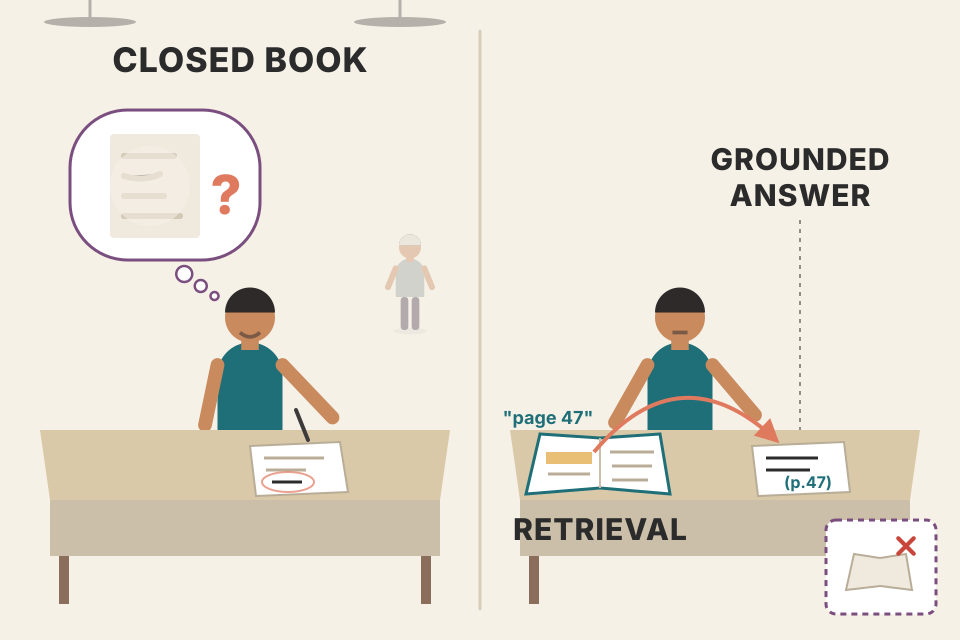
An open-book exam versus a closed-book exam. Closed book, a student who half-remembers will still write a confident answer. Open book, they look up the right page first and copy the facts into their own words, with a page reference. Where it breaks: an open book only helps if the student opens the right page (retrieval quality) and actually reads it rather than writing from memory anyway (faithfulness, plate 31).
An LLM's knowledge is frozen in its weights at training time and is stored fuzzily. RAG moves the knowledge outside the model into a searchable store that you can update any time. At question time, the relevant passages are put into the prompt, and the model's job becomes reading comprehension, which LLMs are much better at than precise recall.
"RAG or fine-tuning to teach the model our company knowledge?" Say: "RAG for facts: it's updatable without retraining, it can cite sources, and it respects access control per document. Fine-tuning is better for teaching style, format or a skill. Often you do both: RAG for knowledge, light fine-tuning for behaviour. For a memory layer in a voice agent, RAG is natural because the facts change every conversation."
To turn the search system into a RAG system, add an LLM at the end of the search pipeline. Give it the question and the top retrieved documents, and ask it to answer the question using the context those results provide.
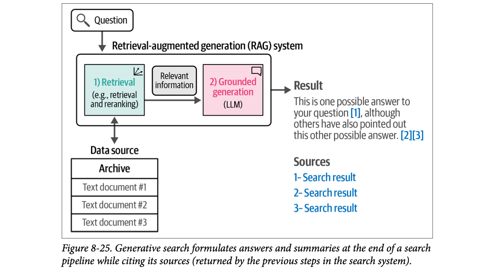
How to read this figure. It's Figure 8-24 with more detail. The retrieval box now says "e.g., retrieval and reranking": the whole pipeline of plates 3–16 can live here. A grey "relevant information" box travels from retrieval to the LLM. The output on the right is the cited answer from Figure 8-3, with sources 1–3 being the search results that were passed in.
This generation step is called grounded generation: the retrieved information sets up a context that grounds the LLM in the domain you care about. Figure 8-26 shows where grounded generation sits if we continue the embedding-search example from earlier.
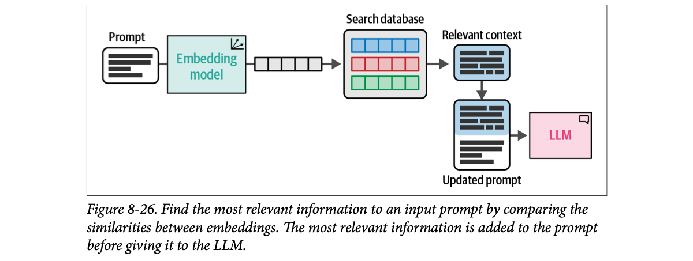
How to read this figure. Left to right: the user's prompt is embedded into a vector (white cells), compared with the search database (blue, red, green rows), and the closest one, blue, returns its text as relevant context. That blue context is stacked on top of the original prompt to form the updated prompt, which is what the LLM actually receives. The LLM never sees the database, only the updated prompt.
A customer-care agent at a bank. You ask about a charge; before answering, the agent pulls up your last three statements on screen (retrieval) and then explains, pointing at the line on the statement (grounded generation with citation). Where it breaks: the agent can tell if the screen shows the wrong customer. An LLM will happily answer from whatever context it gets.
"Grounded" means the answer is anchored to text in the prompt rather than to the model's memory. Mechanically it's just prompt construction: retrieved chunks + an instruction + the question. The model's attention then copies and paraphrases from the context. Citations work by numbering the chunks so the model (or a post-processing step) can point back to them.
"Draw a RAG architecture." Say: "Offline ingestion: load, chunk, embed, upsert to a vector store with metadata. Online: optional query rewriting, hybrid retrieval of top-k, rerank to top-n, build a prompt with numbered chunks and an instruction to answer only from them and cite, call the LLM, return the answer with sources. Around it: caching, access control on retrieval, and an eval set for retrieval and answer quality."
The first RAG system adds a grounded generation step after the search results. It uses Cohere's managed LLM, which builds on the search systems shown earlier. Two steps: (1) retrieval with the embedding search function from plate 5 (the book's comment notes that ideally you'd use hybrid search), and (2) grounded generation: pass the top documents to the co.chat endpoint along with the question.
question = "income generated"
# 1) retrieval: dense search (hybrid would be better)
top = dense_search(question)
# 2) grounded generation: hand the passages to the chat endpoint
passages = [{"text": t} for t in top["text"]]
reply = client.chat(message=question, documents=passages)
print(reply.text)The result, in summary: the film made a worldwide gross of over $677 million, or $773 million counting re-releases. That's a correct, short answer drawn from the box-office sentence.
The model also returns citations: it marks which spans of its answer came from which document. Each citation has a start and end character position in the answer, the cited text, and the document id it came from. In the book's run, three spans ("worldwide gross", "over $677 million", and the "$773 million with subsequent re-releases" part) all point to doc_0, the box-office sentence. The response also lists the documents used.
The answer below is my paraphrase, with the three cited spans highlighted the way an app would render span citations. Tap a highlighted span to see its source.
A news report where every number has a little footnote you can tap to see the original press release. Where it breaks: a footnote only shows where the words came from, not that the source is right; if the retrieved document is wrong, the citation faithfully points at a wrong fact.
Passing documents= tells the managed model to use RAG-specific behaviour: it treats the documents as evidence, writes the answer from them, and produces span-level citations (character offsets into its own output plus document ids). That's possible because the model was trained for grounded generation with citations; a generic local model (plate 23) won't do it out of the box.
"How do you show users where an answer came from?" Say: "Either use a model or API that returns span-level citations, or number the chunks in the prompt, instruct the model to tag claims with [n], and validate those tags afterwards. In the UI, link each [n] to the chunk with its title and URL. Citations also enable automatic checks, like citation precision and recall (plate 31)."
dense_search function reused here.Next the book rebuilds the same basic RAG flow with local models. Two things are lost compared with the API version: span citations, and quality, since a small local model won't work as well as the large managed one. But it shows the whole flow end to end.
It starts by downloading a quantized model (a model stored in a compact file format; see Chapter 7): Phi-3-mini-4k-instruct in GGUF format, the fp16 version, from Microsoft's Hugging Face repository.
The model is loaded with llama.cpp (a fast C++ inference engine), its Python binding llama-cpp-python, and LangChain (a framework for chaining LLM calls, introduced in Chapter 7).
# same settings as the book, my names; the book imports LlamaCpp from langchain
from langchain import LlamaCpp
gen_llm = LlamaCpp(
model_path="Phi-3-mini-4k-instruct-fp16.gguf", # check the path on your machine
n_gpu_layers=-1, # put every layer on the GPU
max_tokens=500, # cap on generated tokens
n_ctx=2048, # context window used at run time
seed=42, # reproducible sampling
verbose=False,
)| Setting | Value | Why it matters for RAG |
|---|---|---|
n_gpu_layers | -1 | offload all layers to GPU: faster answers |
max_tokens | 500 | limits answer length (and latency) |
n_ctx | 2048 | prompt + retrieved chunks + answer must all fit in 2,048 tokens |
seed | 42 | same output each run, handy when comparing prompts |
n_ctx = 2,048 tokens. Reserve 500 for the answer (max_tokens) and about 80 for the template and question. That leaves ≈ 1,468 tokens for retrieved context: about 4 chunks of 350 tokens, or 7 chunks of 200. Retrieve too many and the prompt overflows; that is one practical reason chunk size matters.
In newer LangChain versions, LlamaCpp, HuggingFaceEmbeddings and FAISS live in the langchain_community package (and RetrievalQA is considered legacy). The ideas are the same; check the import paths for the version you install.
Running a small chai stall instead of ordering from a big café chain: cheaper, private, under your control, but the menu is smaller and the quality depends on you. Where it breaks: the stall doesn't come with a receipt printer: no span citations unless you build them.
GGUF is llama.cpp's file format; it packs the weights (here in 16-bit floats) plus tokenizer and metadata into one file. llama.cpp runs the model on CPU and/or GPU; n_gpu_layers chooses how many Transformer layers live on the GPU. LangChain's LlamaCpp wrapper exposes this as a standard LLM object that chains can call.
"Why run RAG with a local model?" Say: "Data never leaves our infrastructure, cost is fixed instead of per token, and latency is predictable. The trade-offs are weaker reasoning and instruction following than frontier models, no built-in citation feature, and a small context window, so retrieval has to be tighter."
Next, an embedding model. The book's text says it chooses BAAI/bge-small-en-v1.5, which at the time of writing ranked high on the MTEB leaderboard (Massive Text Embedding Benchmark) while being relatively small.
Mismatch in the book: the code right below that sentence actually loads thenlper/gte-small, not bge-small-en-v1.5. Both are small English embedding models that ranked well on MTEB; either works for the demo. Use whichever you choose consistently for documents and queries.
from langchain.embeddings.huggingface import HuggingFaceEmbeddings
from langchain.vectorstores import FAISS
embedder = HuggingFaceEmbeddings(model_name="thenlper/gte-small") # as in the book's code
store = FAISS.from_texts(sentences, embedder) # embeds all 15 sentences + builds the indexWhat each line does: HuggingFaceEmbeddings downloads the model from Hugging Face and runs it locally. FAISS.from_texts embeds every text with that model and builds a local FAISS index in one call: steps 2 and 3 of plate 4 combined.
Choosing a translator: the big leaderboard champion is expensive and slow; a small one that scores nearly as well is good enough for a 15-sentence document. Where it breaks: leaderboard rank is an average over many tasks; your domain may rank them differently, so test on your own queries.
Small embedding models (tens of millions of parameters, a few hundred dimensions) run fast on a laptop CPU, which matters because every document and every query must be embedded. The vector store wrapper keeps the text alongside the vectors, so a search returns the original chunks ready to paste into a prompt.
"How do you choose an embedding model?" Say: "Start from the MTEB leaderboard filtered by language and size, then evaluate two or three candidates on my own queries with recall@k or MAP. I weigh dimension (storage and speed), max input length (chunk size), license, and whether it supports query/document prefixes. And I never mix models: if I change models I re-embed the whole corpus."
The prompt template plays a vital role in RAG: it's the one place where the relevant documents are communicated to the LLM. The book creates an extra input variable called context to carry the retrieved documents, alongside question.
Its template uses Phi-3's chat format: a <|user|> turn containing a "relevant information" section (where {context} goes), then an instruction to answer the question concisely using that information, then {question}, closed by <|end|> and an open <|assistant|> turn for the model to fill in.
from langchain import PromptTemplate
from langchain.chains import RetrievalQA
rag_template = """<|user|>
Facts you may use:
{context}
Using only the facts above, briefly answer: {question}<|end|>
<|assistant|>""" # my wording; the book's has the same shape
rag_prompt = PromptTemplate(template=rag_template,
input_variables=["context", "question"])
qa = RetrievalQA.from_chain_type(
llm=gen_llm,
chain_type="stuff", # stuff all retrieved docs into {context}
retriever=store.as_retriever(),
chain_type_kwargs={"prompt": rag_prompt},
verbose=True,
)
qa.invoke("Income generated")What each part does: PromptTemplate declares the two slots. RetrievalQA is a ready-made LangChain chain: it sends the question to the retriever (the FAISS store), takes the returned documents, and with chain_type="stuff" simply stuffs them all into {context} before calling the LLM. verbose=True prints what the chain is doing.
The result (summarised): the local model says the film earned over $677 million worldwide in 2014, making it the tenth-highest grossing film that year, and about $773 million with re-releases. Then it keeps going: it adds a remark about the US release moving from film stock to digital projectors, speculates that this might have widened the audience and raised earnings, and admits the context doesn't give data on that.
As always, you can adjust the prompt to control the generation, for example its length and tone.
Compare the local answer with its context. The money figures come from the box-office sentence: grounded. The sentence about digital projectors comes from another retrieved sentence (the US release one), but the claim that it "might have contributed" to higher earnings is the model's own speculation, not in any document. To its credit it says the data isn't provided. This is exactly what faithfulness metrics (plate 31) are designed to catch, and a stricter prompt ("answer only from the facts; one or two sentences") usually reduces it.
Handing a junior colleague a printout and saying "answer the client from this". The good junior quotes the printout. The chatty junior quotes it, then adds a theory of his own. Where it breaks: you can tell your colleague off once; with an LLM you have to write the rule into every prompt.
The "stuff" strategy is plain concatenation: simple and keeps all context in one call, but limited by the context window (2,048 tokens here). Other LangChain chain types summarise or process documents separately before combining. Small models follow instructions less strictly, so they're more likely to blend context with prior knowledge or speculation; the chat-format tokens (<|user|> etc.) matter because Phi-3 was trained to respond after <|assistant|>.
"How do you write a RAG prompt?" Say: "Put numbered context first, then a clear instruction: answer only from the context, say you don't know if it isn't there, cite chunk numbers, keep it short. Use the model's chat template. Then test on questions whose answer is not in the context, to check it refuses instead of improvising."
The section "Advanced RAG Techniques" lists several extra techniques that improve RAG systems. The first is query rewriting.
If the RAG system is a chatbot, the simple pipeline above would struggle in the search step when a message is too verbose, or when it refers back to earlier messages in the conversation. So it's a good idea to use an LLM to rewrite the query into one that helps retrieval find the right information.
The book's example: a long, wandering message from a student who has an essay due tomorrow about some animal, likes penguins, considers dolphins, wonders whether dolphins count as animals, decides on dolphins and finally asks where they live. All of that should be rewritten into a short query: "Where do dolphins live".
Rewriting can be done with a prompt (or through an API call). Cohere's API, for example, has a dedicated query-rewriting mode for co.chat.
# illustrative: rewriting with any instruction-following LLM
REWRITE = """Rewrite the user's last message as one short web-search query.
Use the conversation for missing context. Output only the query.
Conversation:
{history}
Last message: {message}
Query:"""
search_query = llm(REWRITE.format(history=chat_log, message=user_msg)).strip()A toy keyword-overlap score between the query and a target passage about where dolphins live. The long message shares the key words but buries them among many others; the rewritten query is all signal.
Calling a helpline and telling a long story; the operator types three words into the system: "dolphin habitat query". Where it breaks: the operator can ask you to clarify; an automatic rewriter may silently drop a detail that mattered.
Embedding a long message produces a vector that averages all its topics (essays, deadlines, penguins), drifting away from the real need. Follow-up messages ("what about their diet?") contain pronouns or omissions that only make sense with history. The rewriter fixes both: it removes noise and resolves references, so the retriever gets a self-contained query.
"Users in multi-turn chat ask 'and what about the second one?' and retrieval fails. Fix?" Say: "Add a query-rewriting step: an LLM call that takes recent history plus the last message and outputs a standalone search query. It adds one small, fast LLM call of latency, so in a realtime voice agent I'd use a small model and run it in parallel with other work, or skip it when the message is already self-contained."
Extend query rewriting so it can produce several queries when one isn't enough. The book's example question asks to compare Nvidia's financial results in 2020 with 2023.
One document might hold both years, but more likely you're better off running two searches:
Then give the top results of both queries to the model for grounded generation.
A further small improvement: let the query rewriter decide that no search is needed, when the model can confidently answer directly without searching.
Comparing two phones for a friend: you open one tab for each phone's specs, then write the comparison from both tabs. Where it breaks: you know when one tab already has a comparison table; a planner LLM may run two searches anyway unless you let it decide.
A single embedding for "compare X in 2020 vs 2023" sits between the two years and may retrieve a passage about neither, or only one. Splitting into sub-queries gives each its own focused vector. Running them in parallel keeps latency close to a single search. The "no search needed" option saves cost on questions like "what is 2 + 2" or chit-chat.
"How do you handle comparison questions in RAG?" Say: "Decompose the question into one sub-query per entity or time period, retrieve for each in parallel, merge and deduplicate the results, and pass them to the generator labelled by sub-query. I'd also allow the planner to return zero queries when no lookup is needed."
A more advanced question may need a series of sequential queries. The book's example asks who the largest car manufacturers were in 2023 and whether each makes EVs (electric vehicles).
Planning a trip: first you search "best hill stations near Bangalore", and only after seeing "Coorg, Ooty, Chikmagalur" can you search "Coorg homestays", "Ooty homestays" and so on. Where it breaks: if the first hop returns a wrong list, every following hop faithfully researches the wrong places.
The system loops: generate a query → retrieve → read the result → decide the next query (or stop). Each loop is an LLM call plus a search, so latency and cost grow with the number of hops, and errors in early hops compound.
"What's multi-hop retrieval and what are its risks?" Say: "It's iterative retrieval where each query uses facts from the previous step, needed for questions like 'who founded the company that makes X'. Risks: latency grows per hop, early errors propagate, and loops need a hop limit. I'd cap hops, run independent follow-ups in parallel, and log each hop for debugging."
Another enhancement: give the model the ability to search multiple data sources. For example, tell it that HR questions should search the company's HR information system (for example Notion), while questions about customer data should search the CRM (customer relationship management system, for example Salesforce).
Type a question. A keyword rule stands in for the LLM's routing decision.
The reception desk at a government office: "passport? counter 3; ration card? counter 7". Where it breaks: some questions need two counters ("does the customer who complained work for us?"), so routers often need to allow several sources.
The LLM is given a description of each source and asked to pick one (or several) before retrieval, often via function/tool calling. Each source can have its own retriever and permissions. Routing keeps irrelevant indexes out of the results and lets you respect access control (HR data shouldn't leak into a sales answer).
"Your company has docs in Notion, tickets in Jira and customers in Salesforce. One RAG bot?" Say: "One front door with a router: an LLM classifies the question and picks one or more sources, each with its own retriever and access checks, and results are merged and reranked before generation. Without routing you'd have to put everything in one index and lose per-source permissions."
Looking back over plates 26–29, each enhancement delegates more responsibility to the LLM so it can solve more complex problems. This depends on the LLM's ability to judge what information it needs and to use multiple data sources. The LLM starts to look more and more like an agent that acts on the world.
The data sources can now be abstracted into tools. If the model can search Notion, by the same logic it should be able to post to Notion too.
Caveat: not every LLM can do these RAG behaviours. At the time of writing, the book says likely only the largest managed models can attempt them. It notes that Cohere's Command R+ does well at these tasks and is also available as an open-weights model.
| Technique | What the LLM decides |
|---|---|
| Basic RAG | nothing about search; it just answers from given context |
| Query rewriting | what to search for |
| Multi-query | how many searches, and whether to search at all |
| Multi-hop | what to search next, based on what it found |
| Query routing | where to search |
| Agentic RAG | which tool to use (search or act), in a loop, until done |
A personal assistant who starts by just reading you the files you hand over (basic RAG), then learns which drawer to open (routing), what to look up next (multi-hop), and finally also books the cab and sends the email (agent with tools). Where it breaks: an assistant who can act can also act wrongly, so write actions need permissions and confirmation.
Agentic RAG is a loop: the LLM receives the goal and a list of tools (search HR, search CRM, post to Notion …), chooses a tool and arguments, gets the result, and repeats until it can answer. It needs strong instruction following and tool-calling skill, which is why the book says only the biggest models could do it reliably at the time.
Since publication, tool calling has become standard across most major model families, including many open-weights models, and protocols such as MCP (Model Context Protocol) standardise how tools and data sources are exposed to agents.
"What's agentic RAG and when wouldn't you use it?" Say: "Retrieval exposed as tools that an LLM calls in a loop, deciding what, where and how often to search, and possibly taking actions. I wouldn't use it when a fixed pipeline answers the questions well: agents add latency, cost and unpredictability. For a realtime voice agent I'd keep a fast fixed RAG path and only escalate to agentic tool use for complex requests."
How to evaluate RAG is still being worked out. The book recommends the paper "Evaluating verifiability in generative search engines" (2023, Nelson F. Liu, Tianyi Zhang and Percy Liang; footnote 2), which runs human evaluations of different generative search systems along four axes:
| Axis | Question it asks |
|---|---|
| Fluency | Is the generated text fluent and cohesive? |
| Perceived utility | Is the answer helpful and informative? |
| Citation recall | Of the generated statements about the external world, what proportion are fully supported by their citations? |
| Citation precision | Of the generated citations, what proportion actually support the statements they're attached to? |
Human evaluation is always preferred, but there are ways to automate it: have a capable LLM act as a judge, called LLM-as-a-judge, and score the generations along these axes. Ragas is a software library that does exactly this. It also scores more useful metrics, such as:
The Ragas documentation gives the exact formulas for these metrics.
A made-up answer with four statements and four citations. For each statement, mark whether its citations fully support it; for each citation, whether it supports its statement.
Split the answer into claims: (a) over $677M worldwide; (b) tenth-highest of 2014; (c) about $773M with re-releases; (d) US release moved from film stock to digital; (e) that shift may have raised earnings. Claims a–d appear in the context, e does not. Faithfulness ≈ 4 / 5 = 0.8. Answer relevance: the question was about income, and claims d–e drift off-topic, so a judge would mark relevance down too.
Checking a college assignment with references. Citation recall: did every claim have a reference that backs it? Citation precision: does every reference actually say what it's cited for? Faithfulness: did the student stick to the sources? Where it breaks: a human examiner knows the subject; an LLM judge can share the same blind spots as the model it grades.
RAG can fail in two places: retrieval (wrong or missing context) and generation (ignoring or embellishing the context). MAP/nDCG (plates 17–19) test retrieval; these axes test generation. LLM-as-a-judge works by prompting a strong model to split the answer into claims and check each against the context, which is cheap and scalable but should be spot-checked against human labels.
"How do you evaluate a RAG system?" Say: "Separately for each stage. Retrieval: recall@k and MAP or nDCG on a labelled query set. Generation: faithfulness to the context, answer relevance, and citation precision and recall, scored by an LLM judge such as Ragas and calibrated against a human-labelled sample. Plus fluency and usefulness from human review or user feedback. I run this suite on every change to chunking, models or prompts."
The chapter looked at how language models can improve existing search systems and even become the core of new, more powerful ones:
It also covered one way to evaluate search systems: mean average precision scores a system over a test suite of queries with known relevance judgments, so systems can be compared. Evaluating RAG needs several axes (faithfulness, fluency and others) judged by humans or by LLM-as-a-judge.
Next chapter: making language models multimodal, so they reason about images as well as text.
| Term | Plain meaning | Plate |
|---|---|---|
| Semantic search | search by meaning instead of exact keywords | 1 |
| Hallucination | a fluent, confident answer that is wrong or made up | 1 |
| Dense retrieval | embed query and documents; return nearest neighbours | 2–3 |
| Embedding | a vector of numbers representing a text's meaning | 3 |
| Nearest neighbours (kNN) | the k stored vectors closest to the query vector | 3 |
| Similarity threshold | maximum distance (or minimum score) for a result to count as relevant | 3, 7 |
| input_type (search_document / search_query) | tells an asymmetric embedding model which side of search a text is on | 4 |
| Search index | a structure for fast nearest-neighbour lookup (e.g. FAISS IndexFlatL2) | 5 |
| BM25 | a leading lexical (keyword) ranking function | 6 |
| Lexical search | matching on the words themselves | 6 |
| Stop words | very common words dropped before keyword matching | 6 |
| Hybrid search | combining semantic and keyword search | 7 |
| Context size | maximum number of tokens a model can take as input | 8 |
| Chunking | splitting long documents into smaller pieces to embed | 8–10 |
| Overlapping chunks | chunks that share some text with their neighbours to keep context | 10 |
| ANN (approximate nearest neighbour) | fast search that may occasionally miss the true nearest vector (Annoy, FAISS) | 11 |
| Vector database | a store for vectors with add/delete without rebuild, and filters (Weaviate, Pinecone) | 11 |
| Positive / negative pairs | (query, relevant doc) and (query, irrelevant doc) training examples | 12 |
| Reranker | stage-two model that reorders a shortlist by relevance | 13–16 |
| First stage / two-stage search | a cheap shortlist step followed by an expensive reranking step | 13–14 |
| Cross-encoder | a model that reads query and document together and outputs one score | 16 |
| monoBERT | BERT used as a cross-encoder reranker (multi-stage ranking paper) | 16 |
| Test suite / relevance judgments | archive + queries + labels saying which docs are relevant per query | 17 |
| Precision@k | relevant results in the top k, divided by k | 18 |
| Average precision (AP) | mean of precision@k at each relevant position (÷ total relevant) | 18 |
| MAP | mean of AP over all queries | 19 |
| nDCG | order-aware metric with graded (not just yes/no) relevance | 19 |
| RAG | retrieval-augmented generation: search, then generate from the results | 20 |
| Grounded generation | generation anchored in retrieved context | 21 |
| Generative search | search that returns a written answer with citations | 2, 21 |
| Span citation | a citation that maps a character range of the answer to a source document | 22 |
| GGUF / quantized model | compact model file format used by llama.cpp | 23 |
| MTEB | Massive Text Embedding Benchmark leaderboard | 24 |
| "stuff" chain | put all retrieved docs into one prompt | 25 |
| Query rewriting | LLM turns a message into a clean, standalone search query | 26 |
| Multi-query RAG | several independent searches for one question | 27 |
| Multi-hop RAG | sequential searches, each depending on the last | 28 |
| Query routing | choosing which data source to search | 29 |
| Agentic RAG | LLM uses data sources as tools (search and act) in a loop | 30 |
| Citation recall / precision | share of statements supported by citations / share of citations that support their statement | 31 |
| LLM-as-a-judge | a strong LLM scoring outputs instead of humans | 31 |
| Faithfulness / answer relevance | answer consistent with context / answer on-topic for the question (Ragas) | 31 |
embed (with search_document/search_query), rerank, chat with documents and span citations, and a query-rewriting mode. Its Command R+ model handles advanced RAG and has open weights.Dense retrieval (a ranked list of documents by embedding similarity), reranking (the same shortlist reordered with relevance scores), RAG (a generated answer, ideally with citations).
The right sentence talks about "scientific accuracy", sharing no exact token with the query (after stop words the query is just "precise", "science"). BM25 needs exact overlap, so it picked the sentence containing "science fiction". Embeddings match by meaning.
It still returns three results (box office, astronomers, cinematography) with distances, because nearest-neighbour search always returns something. Fixes: a distance threshold, letting users judge, and tracking clicks to improve the system.
Exact phrase or identifier matches are a keyword-search strength, and dense models degrade outside their training domain (e.g. legal text), where keyword matching still works.
Embed only a representative part (title or beginning): leaves most of the text unsearchable. Embed chunks and average them: a highly compressed vector that loses information.
Per sentence: too granular, vectors lack context ("it won in 2015": what's "it"?). Whole document: exceeds the context limit or gets truncated, and the vector blurs many topics. Middle ground: paragraphs or 3–8 sentences, with title and/or overlap added.
Brute force is fine for thousands to tens of thousands of vectors. ANN libraries (Annoy, FAISS) search millions in milliseconds, can use GPUs and clusters. Vector DBs (Weaviate, Pinecone) add adding/deleting without rebuilding the index, and filtering.
Queries paired with relevant results (positives, e.g. "Interstellar release date" → the premiere sentence) and irrelevant ones (negatives, e.g. "Interstellar cast"). Training pulls positives closer and pushes negatives away.
It reads query and document together so attention can compare them directly, but it must run once per (query, document) pair at query time with nothing precomputed, which is far too slow over millions of documents. So it reranks a shortlist.
Precision@1 = 1, precision@3 = 2/3 ≈ 0.67 → AP = (1 + 0.67)/2 ≈ 0.83 (book: 0.8). MAP = (0.8 + 1 + 0.3)/3 = 0.7.
nDCG allows graded relevance (one document can be more relevant than another), not just relevant/not relevant, and discounts gains by position.
Generation where the retrieved passages are put into the prompt so the answer is anchored in them. Cohere's chat with documents returned span citations (start, end, text, document id); the local Phi-3 pipeline lost those and was weaker (it drifted into speculation).
(a) query rewriting, (b) multi-query, (c) multi-hop, (d) query routing. Doing all of these with tools in a loop is agentic RAG.
Citation recall: proportion of generated statements about the world that are fully supported by their citations. Citation precision: proportion of generated citations that support their associated statements.
Evaluate each stage separately. Check whether the needed passage was in the retrieved context (recall@k, MAP on a labelled set). If it was missing, fix retrieval (hybrid, chunking, reranker, fine-tuned embeddings). If it was there but the answer was wrong, fix generation (prompt, model) and measure faithfulness with an LLM judge such as Ragas.
Author lists and years for items 2–4 are as commonly cited; the chapter itself names the titles (and the Manning et al. book) without full citations.